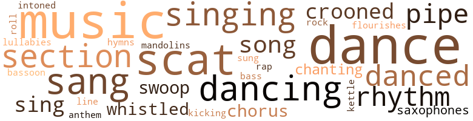
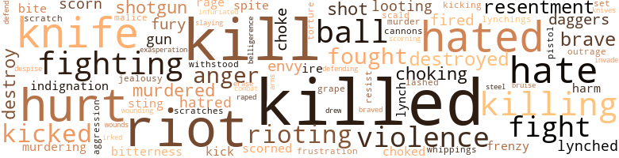
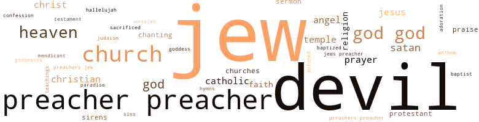

Black Wine (The), by Bennett, Hal (1968)
132 music-related terms matched in this text.
Most frequent terms in this topic: music (18); dance (16); scat (12); sang (9); dancing (8)
bass.n.07
Definition: the member with the lowest range of a family of musical instruments
| word | sentence |
|---|---|
| bass | Viola was saying something that he could n't make out ; he could hear nothing but her throaty voice , like the thumping of an excited bass drum underneath the noise that the mob made . |
bassoon.n.01
Definition: a double-reed instrument; the tenor of the oboe family
| word | sentence |
|---|---|
| bassoon | " You goddamn right I am , " Viola said , breathing like a bassoon . |
chorus.n.01
Definition: any utterance produced simultaneously by a group
| word | sentence |
|---|---|
| chorus | Eloise and Viola had started calling them again in a strident chorus that echoed over their heads like the cracking of a whip . |
| chorus | The whores , understanding , whooped in a chorus and twirled their filmy gowns . |
croon.v.01
Definition: sing softly
| word | sentence |
|---|---|
| crooned | Another time , in what also seemed to have been a dream , he played with his plastic bazooka in the yard while Clair crooned to her talking Mama doll and rocked it in her lap . |
| crooned | " I know , I know , " she crooned , hugging him . |
| crooned | Already , her tears moistened his forehead as she crooned over him in a kind of soft , yet masterful misery . |
dance.n.01
Definition: an artistic form of nonverbal communication
| word | sentence |
|---|---|
| dance | Dolly jangled the bell and did a little gypsy dance . |
| dance | Just before he lost sight of Viola , he saw her face twist into a kind of magnificent delight - " Dance darlings dance darlings ! " |
| dance | Dance you niggers dance you niggers dance ... ! |
| dance | Dance you niggers dance you niggers dance ... ! |
| dance | That was the dance , then - life is the dregs , love is the dance . |
| dance | That was the dance , then - life is the dregs , love is the dance . |
| dance | David realized now that his dance was supposed to be different from everybody else 's , because he was different from everybody else . |
| dance | He would n't stagger , he 'd bear the burden of the dance , which was love and its many rhythms . . . like a full orchestra playing at a happy ball in the heart , where you reach out , and grab , and find that you 're dancing with someone , and not only with yourself . . . . |
dance.n.02
Definition: a party of people assembled for dancing
| word | sentence |
|---|---|
| Dance | Dance the wine . |
| Dance | Dance that wine . " |
| Dance | Dance niggers . |
| Dance | Dance the wine , darlings . |
dance.v.03
Definition: skip, leap, or move up and down or sideways
| word | sentence |
|---|---|
| danced | David saw the staunch antiquity of Richmond and the white marble elegance of Washington - where several black children stuck their tongues out at him and danced a tattered frug as the protesting bus picked its way through the Negro filth behind the Capitol . |
| dance | He thought about a dream he 'd had once , about fish that swam in a sea of music , the waves undulating in a rhythm that made him want to dance , and dizzy at the same time . |
| dance | He wanted to dance up inside her . |
| danced | Standing six inches away now , he danced to the rock-and-roll of an incredible rhythm that almost deafened him , like an entire orchestra playing inside her cake aiming its music at him . |
| danced | He unzipped his pants and arranged his shorts where his baton had dragged them up in that incredible moment when he had danced in front of the whore . |
| dancing | In a peculiar way that he felt very strongly , but did not understand , it would be like dancing up inside Miss Pemberton , to kill Eisenberg 's cat . |
| dance | " Darlings , let 's all drink the dregs of life , " she said , " and dance the Negro wine . " |
| danced | But the whole crowd roared as Viola danced . |
| dancing | Suddenly , she stopped dancing . |
| dance | Sammy Davis , Jr. was great , the way he could sing and dance and impersonate white people and do the fast-draw with a gun . |
| dancing | David bad been dancing around in front of Jerry , cocking his fists and taking dazzling man-sized swipes that fell short by several feet . |
| dance | " Girl , I was so bored there with nothing to do , no music to dance to , nobody interesting to talk to , I started feeling sorry that I had n't gone to somebody else 's chicken dinner after all . " |
| dancing | " Poor baby , " she said , laughing , dancing away , " do you want to play with my bell , like a little baby boy ? " |
| dancing | " I am Alba , " she said , soaring now , her eyes dancing like victorious dolphins breaking through the surface of an incredibly shiny sea . |
| dancing | He looked across the street at two drunks dancing with each other in the fierce sun . |
| dance | " Drink the dregs of life , " Viola had said on the porch that day , " and dance the Negro wine . " |
| dancing | He bet she was up there dancing on the bar or a table or something , the same way she 'd danced on the porch that first day . |
| danced | He bet she was up there dancing on the bar or a table or something , the same way she 'd danced on the porch that first day . |
| dance | Niggers dance you niggers ... ! |
| danced | And Henry Hunter . . . especially Henry Hunter , who had drunk the cheapest kind of wine , and who had danced too fast or too slow to the music that finally dragged him down . |
| dance | From now on , he would dance a gradual kind of flat foot waltz until he found his own true footing . |
| dancing | He would n't stagger , he 'd bear the burden of the dance , which was love and its many rhythms . . . like a full orchestra playing at a happy ball in the heart , where you reach out , and grab , and find that you 're dancing with someone , and not only with yourself . . . . |
flourish.n.05
Definition: (music) a short lively tune played on brass instruments
| word | sentence |
|---|---|
| flourishes | Every Brotherhood Day , he spent some time in both the Baptist and Catholic churches and made small contributions at each with large , noisy flourishes . |
hymn.n.01
Definition: a song of praise (to God or to a saint or to a nation)
| word | sentence |
|---|---|
| hymns | It was one of the hymns from St. Matthew 's Baptist Church that he sang inside his head as the ghost of Miss Ida came up suddenly and kissed him with her cold lips . |
| anthem | Doing a slow shuffle to the thumping anthem of Decatur . |
kettle.n.04
Definition: a large hemispherical brass or copper percussion instrument with a drumhead that can be tuned by adjusting the tension on it
| word | sentence |
|---|---|
| kettle | He also found a brass kettle and put together a bundle of rags that he later sold to the junkman in a package deal for fifty cents . |
kick.v.04
Definition: kick a leg up
| word | sentence |
|---|---|
| kicking | The mule 's hard spine hurt David between his legs ; but he gritted bis teeth and withstood the pain until the mule , wheezing , slowed to a loping walk ; and it would not run again , despite Dolly 's cursing and kicking . |
lullaby.n.01
Definition: a quiet song intended to lull a child to sleep
| word | sentence |
|---|---|
| lullabies | She frowned less and smiled more , and sometimes sang lullabies in a booming voice while she was ironing , aiming her song toward the pantry door so that the newborn kittens could bear . |
mandolin.n.01
Definition: a stringed instrument related to the lute, usually played with a plectrum
| word | sentence |
|---|---|
| mandolins | He wore a short-sleeved shirt with a gaudy Polynesian design of half watermelons and mandolins and brown dancing girls . |
music.n.01
Definition: an artistic form of auditory communication incorporating instrumental or vocal tones in a structured and continuous manner
| word | sentence |
|---|---|
| music | And music . |
| music | He thought about a dream he 'd had once , about fish that swam in a sea of music , the waves undulating in a rhythm that made him want to dance , and dizzy at the same time . |
| music | Standing six inches away now , he danced to the rock-and-roll of an incredible rhythm that almost deafened him , like an entire orchestra playing inside her cake aiming its music at him . |
| music | Abruptly , she shifted , and the music stopped . |
| music | He bet her cake had teeth in it , the music of her orchestra was used to a white man 's baton . |
| music | A gang of winos out front patted their feet to the music and passed around a quart of Thunder-bird . |
| music | Some of them began snapping their fingers and shuffling their feet to a quiet cadence , coupling their own silent music with the real . |
| music | music from across the street . |
| music | I want to be loved I want to cut cake I do n't want to be rescued , the snapping fingers and shuffling feet seemed to say , weaving their quiet , contradictory rhythm in and around the music of Fontella Bass singing stridently in The Cozy Corner . |
| music | The crowd , the noise , surrounded him now like the growth of a giant mouth , their voices the teeth , the music , in it . |
| music | Already the music there was throbbing again . |
| music | " Girl , I was so bored there with nothing to do , no music to dance to , nobody interesting to talk to , I started feeling sorry that I had n't gone to somebody else 's chicken dinner after all . " |
| music | That brass band seemed to be in her backside , too , like a hundred invisible little music men spread out there on the shelf of her butt , tweaking and tooting and thumping as she marched on her spike heels and bellowed hellos to everybody . |
| music | The music , the noise and jukebox lights subsided into an ominous calm . |
| music | Viola was dancing , and snapping her fingers , making her own music , like somebody mashing grapes . |
| music | He could feel in his body the whole back beat of Viola 's rambunctious music dancing through the mob . |
| music | She jumped up and down like he had seen women shout in church , when the music and the preaching got good . |
| music | And Henry Hunter . . . especially Henry Hunter , who had drunk the cheapest kind of wine , and who had danced too fast or too slow to the music that finally dragged him down . |
pipe.n.04
Definition: a tubular wind instrument
| word | sentence |
|---|---|
| pipe | Bubblebutt bad pushed aside some of the equipment and had tied one end of the rope to a water pipe ; and when David entered , he pointed proudly to the crude noose he had fashioned in the other end . |
| pipes | veneered furniture that someone , in an earlier attempt at order , had piled in every corner underneath the water pipes . |
| pipes | Suppose I 'd got stuck up there in those water pipes ? " |
| pipe | Jerry stepped to the water pipe and cocked one leg out the window . |
| pipes | David and Jerry had swept the whole floor clean , and brushed clown hitters of cobwebs and dirt from the low-hanging water pipes . |
rap.n.05
Definition: genre of African-American music of the 1980s and 1990s in which rhyming lyrics are chanted to a musical accompaniment; several forms of rap have emerged
| word | sentence |
|---|---|
| rap | She called her friend gently , but gave her a hard rap on the shoulder . |
rhythm.n.04
Definition: the arrangement of spoken words alternating stressed and unstressed elements
| word | sentence |
|---|---|
| rhythm | He thought about a dream he 'd had once , about fish that swam in a sea of music , the waves undulating in a rhythm that made him want to dance , and dizzy at the same time . |
| rhythm | Standing six inches away now , he danced to the rock-and-roll of an incredible rhythm that almost deafened him , like an entire orchestra playing inside her cake aiming its music at him . |
| rhythm | I want to be loved I want to cut cake I do n't want to be rescued , the snapping fingers and shuffling feet seemed to say , weaving their quiet , contradictory rhythm in and around the music of Fontella Bass singing stridently in The Cozy Corner . |
| rhythm | " You 're the meanest black nigger God ever breathed life into ! " she said , in rhythm to the rise and fall of the supple switch . |
| rhythms | He would n't stagger , he 'd bear the burden of the dance , which was love and its many rhythms . . . like a full orchestra playing at a happy ball in the heart , where you reach out , and grab , and find that you 're dancing with someone , and not only with yourself . . . . |
rock_'n'_roll.n.01
Definition: a genre of popular music originating in the 1950s; a blend of black rhythm-and-blues with white country-and-western
| word | sentence |
|---|---|
| rock-and-roll | Standing six inches away now , he danced to the rock-and-roll of an incredible rhythm that almost deafened him , like an entire orchestra playing inside her cake aiming its music at him . |
sax.n.02
Definition: a single-reed woodwind with a conical bore
| word | sentence |
|---|---|
| saxophones | Whale baby whale , like to the fast churn of muddy saxophones . |
| Saxophones | Saxophones . |
scat.n.01
Definition: singing jazz; the singer substitutes nonsense syllables for the words of the song and tries to sound like a musical instrument
| word | sentence |
|---|---|
| scat | He knew that if Clair was here , she would be riding in the front scat with Robert and Eloise . |
| scat | Laughing , Eloise sat in the front scat with Robert Bartley . |
| scat | Eloise rode between him and Dolly in the back scat ; every once in a while she took off her purple bandanna and wiped her eyes , then tied it back on again . |
| scats | Eloise and Viola occupied the scats across the aisle from him and Dolly . |
| scat | The nine-hour trip had seemed almost interminable to David ; and he was jumping with excitement when the powerful motors whined to a stop and he sat in the quietest of silences against the hot leather scat until the overhead lights came on in a dazzling finale to the journey . |
| scat | She almost struck him , that he could make such a suggestion and touch her like that while her son was sleeping in the hack scat . |
| scat | He looked at David sleeping in the hack scat . |
| scat | Smacking his lips , slouching in the front scat , he cut the ignition and headlights , leaving Eloise alone in the first gray shadows of dawn . |
| scat | She awakened David and helped him from the back scat . |
| scat | Watching those riots , David used to sit on the edge of his scat and shout with the black people , although he shouted inside himself will * a vague sense that he should not be shouting at all , and with an even deeper sense that he , too , should be rioting , if only be lived in Chicago or California , some place far away like that . |
| scat | David rode in the front scat with Quevedo . |
| scat | Working quickly , he yanked back the mildewed covering of the scat . |
| scat | Viola was in the back scat , he thought that Queveda , her Puerto Rican friend , might be driving ; but it was a local cab with a colored man behind the wheel . |
section.n.01
Definition: a self-contained part of a larger composition (written or musical)
| word | sentence |
|---|---|
| section | With the exception of Norman Eiscnbcrg and another Jew , a woman named Mrs. Finkel , the Decatur section of Cousinsvillc was all colored . |
| section | In the old days before World War II , the Decatur section had been exclusively white . |
| section | He owned the two family house that David lived in and several more in the Decatur section . |
| section | That 's the elegant white section of town . |
| section | Everybody knew that Mrs. Finkel did n't like living in the nigger section of town just because she was too poor to live anywhere else . |
| section | The elegant Negroes lived in this section - bartenders , beauticians , barbers , government workers , doctors , dentists , druggists . |
| section | That was the extent of the damage they did to the elegant colored section . |
sing.v.02
Definition: produce tones with the voice
| word | sentence |
|---|---|
| sing | " As I kill this chicken , feel the blood run down and drop between my pretty legs , " He heard her sing , something like that . |
| sang | " Rockabye my little baby , " Clair sang , and David aimed his bazooka right at her heart and fired an imaginary shot . |
| sung | " Rockabye my little baby . . . Clair had sung . |
| sang | They pushed their way through the heavy bushes and stood at the creek 's side , where it sang a smooth , gliding song over its cache of shine and rocks and pebbles . |
| sang | It was one of the hymns from St. Matthew 's Baptist Church that he sang inside his head as the ghost of Miss Ida came up suddenly and kissed him with her cold lips . |
| sang | He tried to make light of her mood , and he sang awhile in a terrible offkey , drumming on the steering wheel . |
| singing | Doris Day was singing It 's Magic leaning against a post on a ship . |
| sing | They do n't sing any more . . . . |
| singing | Fontella Bass was singing Rescue Me on the jukebox in the tavern across the street . |
| sang | Fontella Bass sang in her high nasal whine . |
| sang | Rescue Me , the jukebox sang . |
| singing | All the birds were singing now . |
| sing | Sammy Davis , Jr. was great , the way he could sing and dance and impersonate white people and do the fast-draw with a gun . |
| sang | Fontella Bass sang in The Cozy Corner , high and nasal as always . |
| sang | He remembered , too , how Ins mother always hummed and sang when she was going to work , and complained on coming home . |
| sang | She frowned less and smiled more , and sometimes sang lullabies in a booming voice while she was ironing , aiming her song toward the pantry door so that the newborn kittens could bear . |
singing.n.01
Definition: the act of singing vocal music
| word | sentence |
|---|---|
| singing | " Rockabye . . . Clair was singing . |
| singing | I want to be loved I want to cut cake I do n't want to be rescued , the snapping fingers and shuffling feet seemed to say , weaving their quiet , contradictory rhythm in and around the music of Fontella Bass singing stridently in The Cozy Corner . |
| singing | " Harry Belafonte might decide to divorce his wife and come driving up here for me in a white Cadillac , singing Day-O , I certainly would n't want him to find me in these old rags I wear around the house . " |
| singing | And the crickets are singing . |
song.n.01
Definition: a short musical composition with words
| word | sentence |
|---|---|
| song | They pushed their way through the heavy bushes and stood at the creek 's side , where it sang a smooth , gliding song over its cache of shine and rocks and pebbles . |
| song | " It 's like in that song - - you ca n't have one without the other . " |
| song | She frowned less and smiled more , and sometimes sang lullabies in a booming voice while she was ironing , aiming her song toward the pantry door so that the newborn kittens could bear . |
| song | Activated by quarters , the jukebox in The Cozy Corner sent its song soaring over the scene of the riot . |
swoop.n.01
Definition: (music) rapid sliding up or down the musical scale
| word | sentence |
|---|---|
| swoop | But Eloise was babbling about how she had been on her way home from Viola 's when she saw the bird swoop down and take Clair away . |
| swoop | A few minutes later , he heard the wail of sirens and then saw a fleet of fire engines swoop down Barrow in a cavalcade of flashing red . |
tone.v.01
Definition: utter monotonously and repetitively and rhythmically
| word | sentence |
|---|---|
| intoned | " Miss Fitzgerald , " Eloise intoned , almost like a prayer . |
| chanting | But Dolly apparently did not detect the warning in Viola 's voice , because she kept shouting for the man 's name until the whole crowd had picked up the cry and was chanting in a terrible unison . |
| chanting | Drink the dregs , darlings . . . . " And the crowd was chanting , " Dance that wine , honey . . . . |
tune.n.01
Definition: a succession of notes forming a distinctive sequence
| word | sentence |
|---|---|
| line | " You know that line about Hell hath no fury like it woman scorned . . . ? " |
whistle.v.01
Definition: make whistling sounds
| word | sentence |
|---|---|
| whistled | Bubblebutt whistled . |
| whistled | Hortense whistled . |
378 violence-related terms matched in this text.
Most frequent terms in this topic: killed (42); kill (35); riot (23); hurt (21); knife (17)
abrasion.n.01
Definition: an abraded area where the skin is torn or worn off
| word | sentence |
|---|---|
| scratches | You all do n't want us nigroes to have nothing but the scrapings and the scratches , that 's a natural fact . . . . |
| scratch | Viola tipped them twenty-five cents apiece for all the world to see , and sent them speeding back to New York with the loud reminder that if she found just one scratch on her new furniture , she would complain to the NAACP . |
aggravation.n.01
Definition: an exasperated feeling of annoyance
| word | sentence |
|---|---|
| exasperation | " Shoot , " he said , full of exasperation . |
aggression.n.01
Definition: a disposition to behave aggressively
| word | sentence |
|---|---|
| aggression | Thus , progress is marked in Burnside ; and Devil 's Mountain stands , mighty and erect , as a symbol of male complaisance and female aggression on the flat southwestern plain , the tail of Satan imbedded in a field of red clover , with an eagle 's nest on its tip . |
anger.n.01
Definition: a strong emotion; a feeling that is oriented toward some real or supposed grievance
| word | sentence |
|---|---|
| anger | A terrible sense of outrage almost choked off his breath , and he felt the sour taste of anger squeezing into his throat . |
| anger | David curled up behind her , hanging on for dear life , and giggled at Dolly 's anger . |
| anger | He fought down the anger he felt rising in his throat , and glued his eyes to television . |
| Ire | How come Ire 's so friendly with colored people and everything , always grinning around ? |
| anger | He felt himself recede inside a cold anger that soothed the sting of the willow switch . |
| ire | She resembled a savage in her gypsy costume , l ire long brass earrings rested on her shoulders and against her neck . |
| anger | He knew what she was going to do , he could see the anger there in her butterfly eyes and in the ominous tilt of her blond wig , the way it headed for him in a sparkling blur , before he had a chance to move , to scream , even , she butted him right in the stomach with her wig . |
belligerence.n.01
Definition: hostile or warlike attitude or nature
| word | sentence |
|---|---|
| belligerence | " Well , I thank you all just the same , " Miss Martin said , with a certain amount of belligerence . |
blister.v.02
Definition: subject to harsh criticism
| word | sentence |
|---|---|
| scald | And we made them boil rain water and scald the bucket out before they went to the spring . " |
bruise.n.01
Definition: an injury that doesn't break the skin but results in some discoloration
| word | sentence |
|---|---|
| bruise | " The bruise marks will be there for days . " |
cannon.n.04
Definition: heavy automatic gun fired from an airplane
| word | sentence |
|---|---|
| cannons | Panting , her breasts aimed at him like live cannons . |
contemn.v.01
Definition: look down on with disdain
| word | sentence |
|---|---|
| scorn | It was apparent that she was now trying to reawaken the old rivalry that had existed between them in Burnside ; but Viola was secure here with Quevedo at Eagle Rock , and she allowed a certain amount of scorn to sour her voice . |
| scorn | Hortense 's voice was heavy with scorn . |
| despise | The fact that you 're black causes you to despise yourself and to suspect my every motive . |
| scorn | Dolly 's voice was full of scorn . |
| scorned | " You know that line about Hell hath no fury like it woman scorned . . . ? " |
| scorning | " I 'm not scorning you , " Eisenberg said . |
| scorned | " Darling , that 's the same thing as being scorned , " Viola said . |
craze.n.02
Definition: state of violent mental agitation
| word | sentence |
|---|---|
| frenzy | He fell on her in a trembling frenzy . |
| frenzy | Watching the frantic snow whipped to a frenzy by the wind , she felt a terrible mixture of longing and sadness . |
dagger.n.01
Definition: a short knife with a pointed blade used for piercing or stabbing
| word | sentence |
|---|---|
| daggers | ... I do n't exactly have five hundred dollars , not any more . . . . " He looked daggers at Tumsey Wilton . |
| daggers | Viola looked daggers at Tumsey , who shrugged and slouched against the car . |
| daggers | Smiling all the while , she looked daggers at David to keep him from giving her away . |
defy.v.01
Definition: resist or confront with resistance
| word | sentence |
|---|---|
| withstood | The mule 's hard spine hurt David between his legs ; but he gritted bis teeth and withstood the pain until the mule , wheezing , slowed to a loping walk ; and it would not run again , despite Dolly 's cursing and kicking . |
destroy.v.04
Definition: put (an animal) to death
| word | sentence |
|---|---|
| destroy | He wondered if Eloise really wanted to destroy him , if there was any truth in that . |
| destroyed | Several years later , on the anniversary of the death of the preacher 's wife - she had been destroyed in a fire - Eloisc had fell compelled to relate the story of how she had met Henry Hunter at the preacher 's chicken dinner . |
| destroyed | He remembered the dream in which he had destroyed the hurricane bird . |
| destroy | I 'm going to take charge of this situation , Eloisce I refuse to let you destroy it ! " |
| destroyed | Robert Bartley , Tumsey Wilton , Viola and Eloise huddled around the car as though the world had been destroyed by the bombardment of night , and only they and the Mack convertible had survived . |
| destroy | He knew it would he a difficult thing to do , to destroy her , because she had become more vicious with him the more her belly grew . |
| destroy | - he heard it plainly now ; and he wondered if she had lured him into the mob only to destroy him within the swirling eddies of this baptism of hate overflowing in the hot violence of an August afternoon , but the spirit of the mob was unavoidable . |
| Destroyed | Destroyed like Dolly . |
| destroyed | Had love really destroyed them ? |
draw.v.23
Definition: pull (a person) apart with four horses tied to his extremities, so as to execute him
| word | sentence |
|---|---|
| drew | But he clenched his fists between his legs and drew up into a tight ball . |
envy.n.01
Definition: a feeling of grudging admiration and desire to have something that is possessed by another
| word | sentence |
|---|---|
| envy | There were darker patches of unlighted houses , and Eloise felt a certain envy as she thought about some of those women down there , locked even now in the ecstasy of making love to their men . |
| envy | " You 're making Peach Tart a la Jackie Kennedy , " Hortense said , almost accusingly , and with a certain amount of envy . |
| envy | lie thought with great envy now about Jerry . |
erase.v.01
Definition: remove from memory or existence
| word | sentence |
|---|---|
| erase | The cellar seemed very important to him now , as though his work there could somehow erase the memory of Dolly crying on her stomach . |
fight.n.02
Definition: the act of fighting; any contest or struggle
| word | sentence |
|---|---|
| fighting | " No sense in fighting , girls , " be said , in a kind of frightened way . |
| combat | At the first sign of combat , Viola had taken off her gold shoes . |
fight.n.05
Definition: a boxing or wrestling match
| word | sentence |
|---|---|
| fight | He considered jumping up and starting a fight with Bubblebutt , just to show how brave he was . |
| fight | But he knew that it would come , that some day he and Norman Eisenberg would lock horns like two bulls in a fight to the finish . |
| fight | " Sit down , children , we 're going to see a fight ! " |
| fight | You get in a fight over Dolly ? " |
fight.v.02
Definition: fight against or resist strongly
| word | sentence |
|---|---|
| fought | Until Eloise fought Robert off , and got down on her hands and knees and told Robert to help her find her earring that had fallen to the dust . |
| fight | " Mama 's going to fight ! " she squealed , right in his other ear . |
| fight | He could n't understand why Viola was going to fight , maybe because her wig jarred off when she tackled Eloise like that . |
| fight | " I told you Mama was going to fight , " Dolly said . |
| fight | Darling , why on earth would you want to fight me ? " |
| fighting | And then he got himself killed , fighting over that wine in New Jersey . |
| fighting | With Robert 's black and her black combined , she figured that the only fair thing to do was to give the baby at least a fighting chance up North , if it did n't die somewhere in between . |
| fighting | She had gone down to Lee 's Creek every day and sat in the cold water until she healed , fighting off an occasional snake with a tobacco stick . |
| fought | He fought down the anger he felt rising in his throat , and glued his eyes to television . |
| fighting | Eisenberg 's yard was very narrow ; but because David walked slowly , as if he was fighting his way through the heavy atmosphere of a dream , it took him perhaps five minutes to reach the cat . |
| fighting | No wonder Henry had practically lived in that tavern across the street , and then got himself killed fighting over a pint of wine . |
| fighting | He had seen movies like that where two men loved the same woman and wound up fighting for her . |
| fought | Jerry tried to help him up , but David fought him away . |
| fought | He fought to control himself . |
| defend | David wondered whether Dully could defend herself against the old Jew woman ; she could certainly be nasty , everybody knew that . |
| fighting | " You promised to help me ! " he cried , fighting away . |
| fighting | I felt like fighting over Dolly myself . " |
| fought | She fought like a man . |
| fighting | The next thing he remembered about that belt was seeing it around Henry 's waist out there across the street in front of the Cozy Corner , some leaves swirling down around Henry 's dead thigh after a white policeman had shot him while he was fighting over some wine after Eloise had abandoned him - he 'd said that to the white man - and made him a whore the same way Dolly had got herself killed after he and Jerry had made her a whore . . . . |
| defending | But he inched away from her , he did n't want to be too close to her while she was defending Eisenberg . |
frustration.n.03
Definition: a feeling of annoyance at being hindered or criticized
| word | sentence |
|---|---|
| frustration | He felt an almost continual sense of danger , of frustration , of restlessness and irritation . |
fury.n.01
Definition: a feeling of intense anger
| word | sentence |
|---|---|
| fury | That night , he dreamed of the hurricane bird that Viola had talked about , he dreamed that he had become a man , and that he was protecting a world of dark , squirming figures from the fury of the bird . |
| rage | Barbra Streisand was then the rage ; Viola wore a blonde Streisand wig with a little rat 's tail coiled around one ear . |
| rage | And before Eloise could answer , Viola turned on Dolly and David in a sudden rage . |
| fury | And once , when Jerry was referring for perhaps the hundredth time to how they had done Dolly in , David had whirled on him in a fury and cried , " Why do n't you shut up , boy ? |
| fury | " You know that line about Hell hath no fury like it woman scorned . . . ? " |
gag.v.06
Definition: cause to retch or choke
| word | sentence |
|---|---|
| choking | " Not all black , " Robert said , choking slightly before he grabbed her . |
| choke | Satisfied , Robert had to pull the choke out before the car would start . |
| choking | " She was almost like a Queen , " Miss Poindexter would comment , with a slavish kind of medieval pride choking her voice . |
| choking | The noose was choking her to death . |
| choked | His tongue almost choked him inside his throat . |
| choking | " Old enough to eat cornbread without choking . |
| choke | The liquor burned his throat , but he saw Jerry watching him and he did not choke but once . |
| choke | She stood by Viola and cracked her fingers like she could choke him to death . |
| choked | He felt his head jerk back ns though some huge , heated hand squeezed upward underneath his chin and choked him until he shouted for joy . |
gall.v.02
Definition: irritate or vex
| word | sentence |
|---|---|
| irked | He suddenly felt very irked . |
grapeshot.n.01
Definition: a cluster of small projectiles fired together from a cannon to produce a hail of shot
| word | sentence |
|---|---|
| grape | And then some five minutes longer before he could lay his hands on her , because she moved from the lilac hush to the grape arbor and then to an old tin can that Eisenberg bad set out for birds to drink from - moving away from him with the same stealth that he approached her , as if the two of them were bound together by a metal band that propelled the one as the other approached . |
gun.n.01
Definition: a weapon that discharges a missile at high velocity (especially from a metal tube or barrel)
| word | sentence |
|---|---|
| gun | Her eyes blazed like a ray gun , and he saw her white skin become even whiter under the layers of rice powder she wore . |
| gun | Sammy Davis , Jr. was great , the way he could sing and dance and impersonate white people and do the fast-draw with a gun . |
| guns | They broke into the pawnshop and came out with guns and watches . |
hate.n.01
Definition: the emotion of intense dislike; a feeling of dislike so strong that it demands action
| word | sentence |
|---|---|
| hatred | He felt an almost bitter hatred toward Eloise now , the way she bad brought Henry Hunter here to Decatur and made him drunk and ugly , and then let him get himself killed . |
| hatred | Like Clair 's talking Mama doll , he wondered if anybody else bad ever felt love and hatred at the same time . |
| hate | - he heard it plainly now ; and he wondered if she had lured him into the mob only to destroy him within the swirling eddies of this baptism of hate overflowing in the hot violence of an August afternoon , but the spirit of the mob was unavoidable . |
| hatreds | It was that one act which had shaped his whole world , had shattered his faith in love , and developed his hatreds and given muscle to his fears . . . . |
hate.v.01
Definition: dislike intensely; feel antipathy or aversion towards
| word | sentence |
|---|---|
| hate | I 'd sure hate to lose one . |
| hated | He hated Eloisc for making a fool out of him . |
| hate | I 'd hate for them to see me looking a mess . " |
| hated | He almost hated her for carrying on so much about Clair , and forgetting him . |
| hated | " Viola was right after all , as much as I may have hated doing that kind of thing , but I 've got to look after you , David . |
| hated | Only sleep sometimes brought a few hours ' respite , although he hated going to bed , because sleep impressed him as being a kind of slow death , animated by the deeper death of dreams . |
| hate | As for himself , lie was learning a bold new philosophy from Bubblebutt , who claimed to hate all white people , and especially Jews . |
| hated | He hated the fact that Bubblebutt had seen her looking such a mess . |
| hate | His body turned from love to hate at almost every heart beat . |
| hate | " I hate Jews , " he said , with a horrible grin . |
| hated | He hated the weak , sick way he was feeling . |
| hated | I sure hated to see him go , but he had his wife and ten or fifteen children back there . " |
| hates | We 'll even forget that he told me he hates jews . |
| hate | And on the way home , I thought , They must really do hate me if they do n't want me to wear clean clothes . |
| hate | " I hate Jews , " Viola said . |
| hate | I hate niggers because we 're stupid . |
| hate | I hate Jews because they have everything . . . Eloise was very disturbed . |
| hate | " Viola , you ca n't really hate . . . . |
| hated | He was black himself , he hated the idea of having a sister as light as Clair . |
| hated | He hated the concrete sidewalks , the shanty houses of Decatur . |
| hate | I have no reason to hate all white men . |
| hated | Probably not , the way they had said all those things about the Jews , he hated Eisenberg so much now that he wanted to tell him , but he was afraid to . |
| hated | But he still hated their ugly presence . |
| hated | He hated the doll . |
| hated | He hated her . |
| hated | He surprised himself , wanting her that way so suddenly , even while he hated her . |
| hated | He hated Dolly for lying to him , for the way she had deceived him , had made him be cruel to her . |
| hated | " Come on , honey boy . . . " He thought about all the times he 'd loved Eloise and then hated her almost immediately afterward . . . how she 'd told everybody in Burnside that she did n't know who his father was when she knew all the time . . . . |
| hated | It was the core of the mob , the group canying David on the shoulders of two brawny men , that attacked and tried to destroy the hated heart of Decatur . |
hurt.v.04
Definition: cause damage or affect negatively
| word | sentence |
|---|---|
| hurt | You 'll be hurt bad enough , you wait and see , without me adding none to it . " |
indignation.n.01
Definition: a feeling of righteous anger
| word | sentence |
|---|---|
| outrage | A terrible sense of outrage almost choked off his breath , and he felt the sour taste of anger squeezing into his throat . |
| indignation | Routed , but unharmed , as though the mob forgave them their error of working for white people , the Negro employees stood banded together near what was left of the soda fountain , in the midst of the turbulence they formed a little island of cautious indignation as they waited for the cops to restore order in the white shopping center , so that they could come and restore order in the colored . |
| indignation | Then his fear transformed itself into a raging indignation - against whom he could not have said - and he felt utterly betrayed . |
infuriate.v.01
Definition: make furious
| word | sentence |
|---|---|
| infuriated | But it infuriated Jerry . |
injury.n.01
Definition: any physical damage to the body caused by violence or accident or fracture etc.
| word | sentence |
|---|---|
| harm | " I did n't figure there was any harm , Robert , telling Viola . . . . " Viola laughed . |
| hurt | The mule 's hard spine hurt David between his legs ; but he gritted bis teeth and withstood the pain until the mule , wheezing , slowed to a loping walk ; and it would not run again , despite Dolly 's cursing and kicking . |
| hurt | Her head hurt . |
| hurt | Every bone in his body hurt . |
| hurt | He knew it , that warm feeling coming up out of his hurt knees , poking at his heart . |
| harm | I do n't care what you think of him , he 's never done us a minute of harm , he 's helped us every way he could , and now Viola 's trying to get those niggers over there to hurt him ! |
| hurt | Everybody gets hurt . " |
invade.v.01
Definition: march aggressively into another's territory by military force for the purposes of conquest and occupation
| word | sentence |
|---|---|
| invade | " Tell me , " she said , tossing her long blond hair in a way that made her seem liberal and intellectual at the same time , " tell me how it feels to be as black as you are , " she said , letting a certain amount of gentleness invade her voice , in case he might be the extremely sensitive type . |
jealousy.n.01
Definition: a feeling of jealous envy (especially of a rival)
| word | sentence |
|---|---|
| jealousy | He felt a twinge of jealousy at the idea of Clair getting to heaven before him . |
kick.v.04
Definition: kick a leg up
| word | sentence |
|---|---|
| kicking | The mule 's hard spine hurt David between his legs ; but he gritted bis teeth and withstood the pain until the mule , wheezing , slowed to a loping walk ; and it would not run again , despite Dolly 's cursing and kicking . |
kick_back.v.02
Definition: spring back, as from a forceful thrust
| word | sentence |
|---|---|
| kick | But I 'm still a young woman , I like to get out and kick up my heels once in a while . " |
| kicked | ... he had kicked dirt into her face and patted it solid with his foot . |
| kicked | He remembered Miss Pemberton , how the colored whores had kicked her out of Hay Street . |
| kicked | Hortense said , and she kicked Bubblebutt square in the behind . |
| kicked | " Here I am about to be kicked out into the street , me and my son Robert . |
| kicked | He kicked at Jerry 's groin but Jerry stepped to one side and threw him flying in a low awkward glide five feet away . |
| kick | " We gon na kick all the white people out ! " |
| kicked | " Why , that 's the white woman I replaced on I lay Street , some of the girls showed me a picture of her after they kicked her out . " |
kill.v.10
Definition: cause the death of, without intention
| word | sentence |
|---|---|
| killed | There was no danger , then , of his getting himself killed , not in a month 's time . |
| kill | So Eloise had asked Robert to kill the cat . |
| kill | " As I kill this chicken , feel the blood run down and drop between my pretty legs , " He heard her sing , something like that . |
| killed | They could not pry its beak from her thin leg , so they killed the hen and ate her fried in lard . |
| kills | For that reason , she kills the chickens and turtles . |
| killing | " I mean , for killing his wife like that , burning the house right down on her head ? |
| kill | He 'd climb the mountain , and kill the evil bird , and rescue Clair , even if he did n't like her . |
| killed | And how the real Robert and Eloise had chased him and killed him with a knife ? |
| killed | He thought about the kitten he had killed . |
| killed | Clair 's deadl They just this minute killed her ! |
| kill | So she had made up her mind that if the trip North did n't kill it , then the baby had at least a right to the prestige of being born above the Mason-Dixon line . |
| killed | And then he got himself killed , fighting over that wine in New Jersey . |
| killed | " That preacher ... he killed his wife , " David said . |
| killed | The most powerful and important black man in all Burnside - until he killed his high-yaller wife . |
| killed | Nearly four years later , Henry had been killed in a street corner scuffle over a bottle of cheap wine . |
| killed | Or that she would n't come back home one night after being with Eisenberg , since there were always stories circulating around Decatur about some colored woman who got herself killed messing like that with white men . |
| killed | " They killed the Lord , that 's what . |
| killed | Jews killed the Lord " He 'd forgot about that . |
| killing | " But Mr. Eiscnbcrg did n't have nothing to do with killing anybody . |
| killed | I bet he 's never killed anybody in his life . " |
| kill | " Let 's kill his cat , " Bubblebutt said . |
| kill | Well , we decided just tonight to kill his cat . |
| kill | He 'd tell all the boys in Decatur , Bubblebutt would , that was one reason David had decided to help him kill the cat , to keep Bubblebutt from gossiping about bow he 'd seen Eloise coming home from being with Eisenberg . |
| kill | And he had promised to help kill Eisen-berg 's cat . |
| killed | He had killed cats before , even that little black kitten down in Burnside . |
| kill | But to kill Eisenberg 's cat was a different matter entirely . |
| kill | He wondered if Bubblebutt had figured out how to kill Eisen-berg 's cat . |
| kill | But he did not want to tell her how he and Bubblebutt had decided to kill Eisenberg 's cat , because he knew , instinctively , that she would be horrified . |
| kill | With a terrible aching in his loins , he went back to Decatur to kill Eisenberg 's cat . |
| kill | In a peculiar way that he felt very strongly , but did not understand , it would be like dancing up inside Miss Pemberton , to kill Eisenberg 's cat . |
| kill | It was just like Bubblebutt to get all dressed up to kill a cat . |
| kill | " How we going to kill the cat , Bub-blebutt ? |
| kill | David grunted , " flow we going to kill the cat , man ? " |
| kill | There was something so funny about Bubblebutt worrying about messing up some white boy 's hand-me-down clothes while they were planning to kill the old Jew 's black cat . |
| kill | It seemed only right that he should kill the cat . |
| kill | He was horrified that he had ever wanted to kill her . |
| kill | Mr. Eisenberg ought to kill me and Bubblebutt , he thought , just like we killed the cat . |
| killed | Mr. Eisenberg ought to kill me and Bubblebutt , he thought , just like we killed the cat . |
| killed | They killed Mr , Eisenberg 's cat ! |
| kill | " What you want to kill Eisenberg 's cat for ? |
| kill | " He did n't kill the cat , " Bubblcbutt said proudly . |
| killed | I was the one that killed her . " |
| kill | " How did I know Robert was going to kill Risen berg 's cat ? " |
| killed | " Mama , I killed the cat , " Bubblebutt said , and he jammed his behind against the wall to avoid another kick . |
| kill | " Let 's go kill us some jews ! " it said . |
| killed | Not after the way Bubblebutt had killed Eisenberg 's cat . |
| killed | A vivid picture of the dead cat flashed through his mind as he passed the spot where Bubblebutt had killed it . |
| killed | Maybe they had buried it with Henry , after be got killed . |
| killed | But he did n't remember seeing Henry after he was killed . |
| killed | He felt an almost bitter hatred toward Eloise now , the way she bad brought Henry Hunter here to Decatur and made him drunk and ugly , and then let him get himself killed . |
| killed | No wonder Henry had practically lived in that tavern across the street , and then got himself killed fighting over a pint of wine . |
| killed | Then going on to get himself killed over a pint of wine . |
| killed | He was still angry about the way they had almost ganged up on him before , to get him to clean the cellar after Bubble-butt had killed the cat . |
| kill | " You put your hands on that sweet child again and I 'm going to kill you ! " |
| killing | For it seemed , in truth , that Reverend Cobb was really dead , killing his wife that way , being hunted by the police like be was . |
| killed | You know Reverend Cobb killed his wife , do n't you ? |
| killed | " Show me where you killed the cat , you and that Bubblebutt friend of yours . " |
| killing | Boy , you better learn bow to start killing snakes , you ca n't just break out crying every time one gets after you . |
| killing | " This heat is killing mel " she said . |
| kill | Because I thought he was going to kill me , that 's why . " |
| kill | Why would he want to kill you ? |
| kill | And if that was Winston Churchill , why did n't he kill you later on in the car ? |
| killed | He could have killed her . |
| kill | I 'm sorry that man in the marshes did n't kill you . " |
| killed | Did Eisenberg know yet that he 'd had a daughter by Eloise ... a nappy-headed half-white daughter named Clair who 'd got herself killed by an eagle down in Burnside ? |
| Killed | Killed with the colored newspaper . |
| killing | He could think of no greater insult to God than killing Him with the colored newspaper . |
| killed | " I do n't know why I killed the girl , " The story jumped to another page . |
| killed | He killed Viola 's girl ! |
| killing | She had been crippled somewhere along the way ; killing her seemed to he only Christian thing to do . " |
| kill | And with her there in the jersey marshes , too . . . Winston Cobb , sneaking around to kill Dolly while she took a pee , then changing his mind for whatever reason and going back to the car to wait for her with his eyes in a daze . |
| killed | And his father had killed Dolly . |
| killed | She was n't a thing but trash , going and getting herself killed that way . " |
| killed | " It would have looked a whole lot better , would have reflected less on our race and the civil rights movement , if she 'd got herself killed by a white man . |
| kill | That 's all white people think any way , that colored people do n't do nothing else but kill each other . |
| killed | After the first shock had wore off , though , he could n't feel too sorry about Dolly ; he 'd been killed and cut up a long time ago by Eloise . |
| kill | Still drying glasses , he limped from around behind the bar - he had a bad foot and shiny dark red carbuncles on his chin - frowning , like he wanted to kill somebody . |
| killed | She looked like a billy goat , all those flies swarming round her , He bet she killed a whole heap when she slammed her legs together like that . |
| killed | She cried for a while , he could hear that plain as day , until she blew her nose and said , " I will make a speech in which I will attempt to show that although a black man killed my daughter , it is the white man who 's responsible . |
| killed | The next thing he remembered about that belt was seeing it around Henry 's waist out there across the street in front of the Cozy Corner , some leaves swirling down around Henry 's dead thigh after a white policeman had shot him while he was fighting over some wine after Eloise had abandoned him - he 'd said that to the white man - and made him a whore the same way Dolly had got herself killed after he and Jerry had made her a whore . . . . |
| killed | They killed it somewhere and threw its dead body on his porch . |
| kill | lie thought she was going to kill him . |
| killing | He thought it was nice that Eisenberg could be so upset about the Daredevils ' killing the dog that Eloise had given him . |
| kill | " We gon na kill all the Jews ! " |
| kill | Furthermore , the white man did n't kill Dolly . " |
| killing | " He 's killing every one of us every single day . . . he 's killing us ! " |
| killing | " He 's killing every one of us every single day . . . he 's killing us ! " |
| killed | But I certainly ca n't understand a child of mine getting herself killed that way . " |
| killed | And that other kind of knife that had killed Dolly . |
killing.n.01
Definition: an event that causes someone to die
| word | sentence |
|---|---|
| killing | It was your boy who did the actual killing . |
knife.n.02
Definition: a weapon with a handle and blade with a sharp point
| word | sentence |
|---|---|
| knife | And she insinuated that perhaps David 's lack of success at making babies in their single experiment was due to some essential shortcoming in his cutting knife . |
| knife | She brought chickens and other things to his little pantry room and cut them up with a bone-handled knife when she thought he was n't looking . |
| knife | David had known all the time they were thinking about him , even before Eloise wiped her knife on the hem of her dress and said , " Maybe it 's the wrong insides we 've been looking at . |
| knife | The bone-handled knife went straight to his heart . |
| knife | Dolly had borrowed Tumsey 's knife and she cut the watermelon . |
| knife | Saying it , he felt a pain like a knife slice through his heart . |
| knife | And how the real Robert and Eloise had chased him and killed him with a knife ? |
| knife | " It was a white man with a knife and fork in his hand , lie was looking at me from the preacher 's cellar window . . . . " He felt her tense , and then she smacked one hand to her forehead , hard enough to knock a mule out . |
| knife | Eisenberg , on the other hand , thought that Mrs. Finkel needed a man 's good sharp knife to cut her vanilla-flavored cake . |
| knife | He had a knife in one hand and a fork in the other ! |
| knife | He was just standing still there in the window banging on the sill with that knife and fork - you know how children do when they 're hungry and want to eat ? |
| knife | And that white man down in the cellar , grinning , with that knife and fork in his hand . |
| knife | " He was going to eat you with that knife and fork , " Viola said . |
| knife | Deftly , she peeled them with a paring knife . |
| knife | He closed his eyes and tried to move the leaves away , but they covered everything except the hint of a shine , that might have come from a silver coin , or the blade of a knife , or the glitter of a belt buckle , perhaps , dropped on an autumn street . |
| knives | Switchblade knives on plum-velvet trays , blackjacks . |
| knife | And the knife you cut cake with . |
| knife | And that other kind of knife that had killed Dolly . |
looting.n.01
Definition: plundering during riots or in wartime
| word | sentence |
|---|---|
| looting | The holder ones headed north to the great wealth of white stores on Main Street , where looting would be more profitable . |
| looting | More people were looting the clothing store next door . |
| looting | It was just an excuse for looting , that 's all it was . |
lynch.v.01
Definition: kill without legal sanction
| word | sentence |
|---|---|
| lynch | Maybe they 'd lynch the cat . |
| lynched | He 'd seen a movie once about some white men who lynched a colored man . |
| lynch | He thought it would be fun to lynch Eisenberg 's nigger-black cat . |
| lynched | Hortense 's son and some of those other hoys have lynched Eisenberg 's dog ! |
| lynched | Miss Ida Carlisle 's cellar was thought to have been headquarters for a band of white guerrillas who had opposed General Grant even after Appomattox ; and , before her incarceration in the County crazy home , Miss Ida had been fond of taking visitors down into the dark cavern and showing a black gibbet and a rotted rope where , she claimed , dissident Negroes had been lynched on the spot . |
lynching.n.01
Definition: putting a person to death by mob action without due process of law
| word | sentence |
|---|---|
| lynchings | When this story was heard by the white master - there was very little that he did not know about bis black slaves - be silenced such lies with a few lynchings and many more whippings . |
malice.n.01
Definition: feeling a need to see others suffer
| word | sentence |
|---|---|
| malice | And try as hard as he might , the preacher could n't get any church anywhere else to take him on , so one of the women had told Eloise in a whisper full of malice and satisfaction . |
| spite | But Clair did not seem to be afraid of the mothering cat , and this bravery in her impressed him in spite of himself . |
| spite | After all , there 's no reason we ca n't be friends , in spite of everything . . . . |
murder.n.01
Definition: unlawful premeditated killing of a human being by a human being
| word | sentence |
|---|---|
| murder | He wondered just how guilty Bubblebutt was of murder if Eloise and Mr. Eisenberg were so happy about the result . |
| slaying | Police say that Cobb confessed to the Burnside slaying of his wife " because she was a cripple , too . . . David could read no further , he squatted on the bed and Stared at the paper with a dumb , blind gaze . |
murder.v.01
Definition: kill intentionally and with premeditation
| word | sentence |
|---|---|
| murdered | His father had also been murdered by those same two . |
| murdering | " It almost shakes your belief in God , a preacher murdering his wife that way . " |
| murdered | David wondered what had got into Bubblebutt , the way he had murdered that cat . |
| murdering | Sometimes , she could not help thinking that she might have somehow been as responsible for Henry 's death as the white policeman who had shot him ... as responsible as the preacher had been for murdering his wife , as if she had started a fire where no fire ought to have been . |
| murdered | Under the heading girl murdered , David saw a picture captioned Winston Cobb , confessed slayer . |
| murdered | I do remember Mr. Cobb from when he used to preach in Burnside , before he murdered his wife . |
musket_ball.n.01
Definition: a solid projectile that is shot by a musket
| word | sentence |
|---|---|
| ball | And when Eloise came later on in the night and ordered him to go do the Number One , he went dutifully to the chamber pot in the pantry , where the two remaining kittens slept locked together in a tight , furry ball , he would not look at Eloise , who was already in bed when he came back . |
| balls | She was pinching a stick of butler into balls the size of peas . |
| ball | He wound the cords into a huge ball . |
| ball | He tried to heft the ball . |
| ball | The rubbery smell of burnt electric cords filled his nostrils ; the charred wire formed a twisted ball in the middle of the floor , nestling on its pile of ashes . |
| ball | But he clenched his fists between his legs and drew up into a tight ball . |
| ball | The mob , what was left of it , gathered in a tight ball and hurtled up the street to meet the cops . |
| ball | Her mouth was pinched together in a bitter little ball , and her eyes made her look strange and crazy . |
| ball | He would n't stagger , he 'd bear the burden of the dance , which was love and its many rhythms . . . like a full orchestra playing at a happy ball in the heart , where you reach out , and grab , and find that you 're dancing with someone , and not only with yourself . . . . |
| ball | He wondered if she really would , she and Quevedo down in Burnside having a ball . |
open_fire.v.01
Definition: start firing a weapon
| word | sentence |
|---|---|
| fired | " Rockabye my little baby , " Clair sang , and David aimed his bazooka right at her heart and fired an imaginary shot . |
| fired | David aimed his bazooka and fired ; but the bird kept falling in ever-decreasing circles over the open yard . |
| fired | Casually , he aimed bis bazooka and fired . |
pain.v.02
Definition: cause emotional anguish or make miserable
| word | sentence |
|---|---|
| hurt | It wo n't hurt to milk her again . " |
| hurt | I 'm not going to hurt you , " she said , stretching out her arms to him where she lay on the ground . |
| hurt | I thought it might hurt you to know . |
| hurt | " Eisenberg 's all right , " David said , " he 's never done nothing to hurt me . " |
| hurt | You wo n't get hurt that way . " |
| hurt | He could n't help it , hurt and humiliated as he was . |
| hurt | " Jesus , I really hurt you , did n't I ? |
| hurt | I did n't know it would hurt you that much , honest to God I did n't . |
| hurt | He never wanted to hurt Jerry again , to hurt anybody again . |
| hurt | I wanted to hurt you . " |
| hurt | " Man , I hurt your feelings ? |
| hurt | Unless they had hurt her that way . |
| hurt | And the white man gave him some money a whole fistful of bills and Henry lounged back saying easy baby dont hurt me now Henry Hunter what was left of him what Eloise had thrown away , Henry Hunter reaching up and turning out the light . . . . |
| hurt | I do n't care what you think of him , he 's never done us a minute of harm , he 's helped us every way he could , and now Viola 's trying to get those niggers over there to hurt him ! |
| hurt | I wo n't hurt you . |
pistol.n.01
Definition: a firearm that is held and fired with one hand
| word | sentence |
|---|---|
| pistol | Viola called - she had been in the house loading Eloise 's pistol - and she grabbed Dolly by the hand , and ran up the road after him . |
rape.v.01
Definition: force (someone) to have sex against their will
| word | sentence |
|---|---|
| raped | Still , he thought that he had learned a great truth about making love - that it was nature 's way of weakening the man , of softening him up to be raped by the woman . |
resentment.n.01
Definition: a feeling of deep and bitter anger and ill-will
| word | sentence |
|---|---|
| resentment | David turned just in time to see Eloise 's face stiffen with resentment . |
| bitterness | He felt a bitterness in his mouth , like the sour taste of fear . |
| resentment | And the fact that Jerry had found it by himself , and had not come with the shortcake last night as he had promised , added to David 's resentment as they stopped under a street lamp and Jerry pointed to the three-story house where he had seen the whore . |
| resentment | But more than guilt , he felt a slow burning resentment toward Dolly Anderson , coupled with the need to announce to the world that she , like her mother , was a whore . |
| bitterness | He felt the old bitterness returning . |
| resentment | But he could feel no sorrow , only a burning hatred , and resentment at having been deceived . |
| resentment | " Well , " she said , her voice prim and full of resentment , " I did n't faint , I 'll admit that . |
resist.v.04
Definition: withstand the force of something
| word | sentence |
|---|---|
| resist | He struggled to break away from her , but he was too weak to resist the weight of her as she dragged him to the grass now , still holding his hands behind his back in a tight grip . |
riot.n.01
Definition: a public act of violence by an unruly mob
| word | sentence |
|---|---|
| riots | Take those riots he was seeing on television , those actual newsreels of colored people rioting in Chicago and California . |
| riots | He was learning something about being colored just by watching those riots , those black faces shrieking into the camera with a fire burning somewhere in the background and maybe a cop somewhere else in the background going up against some colored man 's head with his club . |
| riots | Watching those riots , David used to sit on the edge of his scat and shout with the black people , although he shouted inside himself will * a vague sense that he should not be shouting at all , and with an even deeper sense that he , too , should be rioting , if only be lived in Chicago or California , some place far away like that . |
| riot | He wanted to riot , too . |
| riot | Although he did not know against whom to riot . |
| riots | It reminded him of those riots he had seen on television . |
| riot | " Friends ... I would like to tell you about a riot I went to in Harlem last summer . |
| riot | " Tell us about the riot , Vi ! " |
| riot | " It was n't very much of a riot , " Viola continued . |
| riot | After a while , Eloise said thoughtfully , " You know , Hortense , we may just have a riot here in Decatur some day . " |
| riot | But she 's not happy unless she 's raising a riot about something . . . . " He could hear rain heating harder on the house , falling flatly to the street . |
| riots | He switched from channel to channel , looking for pictures of riots . |
| riot | He wondered if the Negroes of Decatur would ever have a riot , or whether they were too trifling , as Hortense George had told Eloise . |
| riot | Right now he wished they would riot . |
| riot | " It 's a riot ? |
| riot | The people of Decatur are having a riot ? " |
| riot | He was in a riot , just like on television ! |
| riot | Why would anybody be running and drinking Coca-Colas in a riot ? |
| riot | And he realized all at once that this riot was no longer aimed at the white man and what he owned ; now it was aimed at every thing of every color that existed in Decatur . |
| riot | Man , what did he have to riot for ? |
| riot | What did anybody have to riot for ? |
| riot | People were creeping back now to the scene of the riot . |
| riot | Activated by quarters , the jukebox in The Cozy Corner sent its song soaring over the scene of the riot . |
| riot | News of the riot was on radio and television , you could bear it coming through open windows and doors . |
| riot | He knew that she was talking about the riot , the fact that she had instigated the riot . |
| riot | He knew that she was talking about the riot , the fact that she had instigated the riot . |
| riot | It was easy to see the scars and ravages of the riot , even here near Main Street . |
| riot | Really , that riot had nothing to do with you . . . . " " Maybe I 'll think about it some more , " Eisenberg said . |
rioting.n.01
Definition: a state of disorder involving group violence
| word | sentence |
|---|---|
| rioting | Take those riots he was seeing on television , those actual newsreels of colored people rioting in Chicago and California . |
| rioting | Watching those riots , David used to sit on the edge of his scat and shout with the black people , although he shouted inside himself will * a vague sense that he should not be shouting at all , and with an even deeper sense that he , too , should be rioting , if only be lived in Chicago or California , some place far away like that . |
| rioting | He watched the Negroes rioting . |
| rioting | It encouraged Negroes to raise chickens , perhaps from the idea that Negroes cat more chicken than whites do , hut more probably to engage them in some petty labor that would at the same time feed them and keep them from rioting . |
| rioting | Negroes were rioting in ghettos all over the country - New York , Los Angeles , Chicago , Cleveland , Detroit . |
| rioting | These niggers were here rioting just for the fun of it ! |
shoot.v.02
Definition: kill by firing a missile
| word | sentence |
|---|---|
| shot | It happened right after the funeral of a poor colored boy who 'd been shot to death by white policemen . " |
| shot | Sometimes , she could not help thinking that she might have somehow been as responsible for Henry 's death as the white policeman who had shot him ... as responsible as the preacher had been for murdering his wife , as if she had started a fire where no fire ought to have been . |
| shot | And that he had shot it with one of those bazookas from the Dillwyn movies . |
| shot | The next thing he remembered about that belt was seeing it around Henry 's waist out there across the street in front of the Cozy Corner , some leaves swirling down around Henry 's dead thigh after a white policeman had shot him while he was fighting over some wine after Eloise had abandoned him - he 'd said that to the white man - and made him a whore the same way Dolly had got herself killed after he and Jerry had made her a whore . . . . |
shotgun.n.01
Definition: firearm that is a double-barreled smoothbore shoulder weapon for firing shot at short ranges
| word | sentence |
|---|---|
| shotgun | But he could not move , even when she staggered back with the shotgun . |
| shotgun | The loud explosion in his ears deafened him , and his eyes clicked shut , and then open again , and recorded the scene of Eloise firing the shotgun in the direction that the bird had gone . |
| shotgun | When the shotgun was empty , Eloise dropped to her knees in front of David and cried with her face torn up like a thundercloud . |
| shotgun | He reloaded the shotgun and set off on his mule for Devil 's Mountain . |
sic.v.01
Definition: urge to attack someone
| word | sentence |
|---|---|
| set | The second year in Decatur - people always said " in Decatur , " as if it were a world unto itself , rather than a long , ugly street that split Cousinsville down the middle - Eloise bought a twenty-one-inch television set on credit , and entrusted the larger part of David 's informal education to its care . |
sting.n.03
Definition: a painful wound caused by the thrust of an insect's stinger into skin
| word | sentence |
|---|---|
| bite | Usually from snake bite . |
| bite | He had thought that a more surprising end awaited him , something more exciting than snake bite or drowning in Lee 's Creek . |
| sting | On good mornings , when the sun had warmed some , and the wind had lost some of its sting . |
| sting | He felt himself recede inside a cold anger that soothed the sting of the willow switch . |
sword.n.01
Definition: a cutting or thrusting weapon that has a long metal blade and a hilt with a hand guard
| word | sentence |
|---|---|
| steel | It was about the size of a steel drum when he was finished , that 's how much cord there was . |
torment.v.01
Definition: torment emotionally or mentally
| word | sentence |
|---|---|
| torture | The hills of Burnside were torture for a cat . |
violence.n.01
Definition: an act of aggression (as one against a person who resists)
| word | sentence |
|---|---|
| violence | " I personally do n't believe in violence . |
| violence | Except for the occasional excitement of racial violence on television , boredom slid over him like the slow ooze of snails . |
| violence | All the violence going on . |
| violence | The violence in the streets . |
| violence | Well , he says he 's against violence . |
| violence | But he arranges demonstrations which often lead to violence . |
| violence | - he heard it plainly now ; and he wondered if she had lured him into the mob only to destroy him within the swirling eddies of this baptism of hate overflowing in the hot violence of an August afternoon , but the spirit of the mob was unavoidable . |
| violence | Without the heat and the violence of Eloise . |
weapon.n.01
Definition: any instrument or instrumentality used in fighting or hunting
| word | sentence |
|---|---|
| arms | But he did not find snakes , only the wounding arms and legs of all the mildewed furniture . |
weather.v.01
Definition: face and withstand with courage
| word | sentence |
|---|---|
| brave | Robert Bartley is big and brave and strong , he thought . |
| brave | " You certainly got brave all of a sudden , " David said . |
| brave | He considered jumping up and starting a fight with Bubblebutt , just to show how brave he was . |
| braved | He braved the low ground almost every day in good weather and made his pilgrimage there , where he threw sticks into the downward spiraling maw , to appease the muddy god that stank of green slime and white men . |
| brave | Mrs. Finkel squeezed her throat and took a brave stance . |
| brave | Besides , he did n't want to brave the moonlight again in the living room . |
whip.v.04
Definition: strike as if by whipping
| word | sentence |
|---|---|
| lashed | His voice lashed like a whip . |
whipping.n.01
Definition: beating with a whip or strap or rope as a form of punishment
| word | sentence |
|---|---|
| whippings | When this story was heard by the white master - there was very little that he did not know about bis black slaves - be silenced such lies with a few lynchings and many more whippings . |
wound.n.01
Definition: an injury to living tissue (especially an injury involving a cut or break in the skin)
| word | sentence |
|---|---|
| wounds | He poured some Kool-Aid on his wounds and went back to the soda fountain . |
wound.n.04
Definition: the act of inflicting a wound
| word | sentence |
|---|---|
| wounding | But he did not find snakes , only the wounding arms and legs of all the mildewed furniture . |
396 religion-related terms matched in this text.
Most frequent terms in this topic: preacher (81); Jew (72); Devil (60); God (34); Jews (26)
baptist.n.01
Definition: follower of Baptistic doctrines
| word | sentence |
|---|---|
| Baptist | Every Brotherhood Day , he spent some time in both the Baptist and Catholic churches and made small contributions at each with large , noisy flourishes . |
baptize.v.01
Definition: administer baptism to
| word | sentence |
|---|---|
| baptized | I was born in New Jersey but I was baptized in St. Matthew 's Baptist Church in Burnside , Virginia . |
catholic.n.01
Definition: a member of a Catholic church
| word | sentence |
|---|---|
| Catholics | Boy , it would really screw her up if the Jews and Catholics both turned out to be right , the old bitch . " |
| Catholic | Arc you Catholic ? " |
| Catholic | That sounds almost the same as being Catholic . " |
| Catholic | Catholic Jews . |
christian.n.01
Definition: a religious person who believes Jesus is the Christ and who is a member of a Christian denomination
| word | sentence |
|---|---|
| Christians | " Ob well , there 's really not that much difference between the Christians and the Jews , " Mrs. Finkel said . |
| Christians | " I rend once somewhere that the only difference between Christians and Jews is that Christians are anti-Jewish and Jews are anti-Christian . |
| Christians | " I rend once somewhere that the only difference between Christians and Jews is that Christians are anti-Jewish and Jews are anti-Christian . |
| Christian | " After all , I am a Christian , you know . " |
church.n.02
Definition: a place for public (especially Christian) worship
| word | sentence |
|---|---|
| church | We went to see Blessed Belshazzar where he has his church in Dillwyn . |
| church | Everything so cold as he had listened for Eloise 's steps coining past the A&P on the corner , past the barber shop , Jeter 's candy store , a house , a church , Mr. Eisen-berg 's . . . . " David ? " |
| church | Now she would be with God in heaven , that 's what they said in church . |
| church | Then he pulled his thing out of his pants right there in front of me and Lizzie Bartley and the rest of those good church women , and started doing the Number One all up and down inside that water pail ! |
| church | Not to mention the excitement of a big church wedding , and wearing a gold ring , and being called Mrs. Henry Hunter , instead of plain old Eloise McLindon like everybody calls me now , despite the fact that I 've got two children , and I tell everybody that both my husbands died in the war . " |
| church | It was his only real knowledge of the strange away world into which his mother and most of the other women on Decatur Street disappeared every noon , and from which Eloise came sighing and tired every night , with gifts and magazines , old clothes , miraculous medals and collection envelopes from Miss Fitzgerald 's church , National Geographies , and other secondhand charities that kept him aware of the other world of beautiful Miss Fitzgeralds and rich Scottish people with a new Afghan hound , like Hortense 's madam . |
| church | The preacher and two or three faithful church sisters were eating chicken on the porch when I got there , talking about how wonderful the preacher had preached in the morning . |
| church | He rolled his eyes in a friendly way , and asked me why I had n't come to church in the morning . |
| church | In the cathlic church , you 've got those statues and things , the preacher wears those long white skirts and talks in Latin and drinks wine right there in front of the congregation . |
| church | We do n't do things like that in my church . " ' |
| church | There had been two men in blue caps and khaki uniforms , and old Lizzie Bartley , another church sister . |
| church | It was like being in somebody 's home on Sunday after church , like paying a visit on Sunday . |
| church | She jumped up and down like he had seen women shout in church , when the music and the preaching got good . |
church.n.04
Definition: the body of people who attend or belong to a particular local church
| word | sentence |
|---|---|
| church | " You ai n't going to no church meeting , you understand , a situation like this . " |
| church | Miss Poindexter at St. Matthew 's church school , for example , was especially fond of talking about how Miss Ida had been the matriarch of Burnside for more than fifty years , ordering the color lines between blacks , browns , and high-yallees like Miss Poindexter and herself . |
| Church | She had played the Virgin Mother in the Christmas pageant at St. Matthew 's Baptist Church for fifty years in a row , until it had been discovered that she was hopelessly insane . |
| Church | It was one of the hymns from St. Matthew 's Baptist Church that he sang inside his head as the ghost of Miss Ida came up suddenly and kissed him with her cold lips . |
| church | And try as hard as he might , the preacher could n't get any church anywhere else to take him on , so one of the women had told Eloise in a whisper full of malice and satisfaction . |
| churches | Every Brotherhood Day , he spent some time in both the Baptist and Catholic churches and made small contributions at each with large , noisy flourishes . |
| Church | Wrapped in the Church of Rome , Mrs. Finkel sometimes accused him of being " pushy . " |
| churches | Dolly sat almost in Viola 's lap , making churches and steeples with her fingers . |
| Church | David and Dolly attended the school named for St. Matthew 's Baptist Church , but operated by the State under some remote sentiment of the legislators in Richmond that second-rate education could be made more palatable to the Negroes of Burnside by associating it with religion . |
| Church | I was born in New Jersey but I was baptized in St. Matthew 's Baptist Church in Burnside , Virginia . |
| church | " My father used to be the preacher at our church down home , " be said . |
| Church | " St. Matthew 's Baptist Church in Burnside , Virginia ? |
| Church | She sometimes did volunteer work for the baptist Church ; Eisenberg knew her from his brotherhood Day visits there . |
| Church | I 'll make my contribution through the Church . |
| Church | The Holy Roman Catholic Church . " |
confession.n.05
Definition: the document that spells out the belief system of a given church (especially the Reformation churches of the 16th century)
| word | sentence |
|---|---|
| confession | Upon hearing Bubblebutt 's confession , she had seemed to lose interest in everything except the tart she was making . |
eden.n.01
Definition: any place of complete bliss and delight and peace
| word | sentence |
|---|---|
| heaven | He wondered if that bird bad taken Clair off to heaven . |
| heaven | He felt a twinge of jealousy at the idea of Clair getting to heaven before him . |
| heaven | David said , " A big bird came , Mania , and carried Clair off to heaven . " |
| heaven | Now she would be with God in heaven , that 's what they said in church . |
| heaven | Clair was in heaven . |
| heaven | He was certainly glad Clair was in heaven . |
| heaven | " He thought it was an angel come down to take Clair away to heaven . |
| Heaven | Actually , he was very worded about Clair , lie realized now - if he had ever thought otherwise - that Clair had not been taken to Heaven , that what waited for her at Devil 's Mountain was probably some terrible kind of mayhem committed by gray feathers like the eagle had left in the yard . |
| heaven | The mountain got its name from the shape of its slender gray pin - nacle , which resembles the tail of Satan protruding a thousand feet from the ground as though Satan , expelled from heaven , had been imbedded into the ground with his tail sticking straight up . |
| heaven | For among the Negroes of Burnside , the entrails of a hog simmered down with onion and red pepper and topped off with a dash of vinegar was truly heaven indeed . |
| heaven | She shook an angry fist at heaven , and the crowd went wild . |
| heaven | but her yellow dress made her black look very pretty ; it seemed to be a kind of aureole surrounding her as she tossed her head angrily and flung her arms toward heaven . |
| heaven | The only reason she 's a Cathlic Jew is she figures either one or the other will land her in heaven . |
| paradise | Flowers grew everywhere around him ; drunk on their perfume and the essence of his own self-importance , blinded by the white May sun , he felt lost inside of paradise . |
friar.n.01
Definition: a male member of a religious order that originally relied solely on alms
| word | sentence |
|---|---|
| mendicant | All in all , it was a fine arrangement for both merchant and mendicant , with the Newark City Police standing by to drag the bodies to Martland Medical Center when one of them dropped dead along the way . |
god.n.03
Definition: a man of such superior qualities that he seems like a deity to other people
| word | sentence |
|---|---|
| God | '' Honest to God , " Robert said . |
| God | He had seen pictures in Sunday school of angels carrying away children to God . |
| God | Now she would be with God in heaven , that 's what they said in church . |
| god | He jumped up and threw his book down and asked her what the hell she was ringing that god - damned bell for ! |
| God | She hoped to God it was n't twins . |
| God | That 's a mistake in the way she was put together by God . |
| God | God loves me because I pay colored women to correct that mistake and keep the cat clean and happy . " |
| God | He sometimes said that people were human beings and that the purpose of each was God . |
| God | I think about God whenever I see the pigeons of autumn , how they go up into the dying oaks and fan their wings to knock the acorns down for food . |
| gods | He remembered that Miss Martin , his teacher , had told him about gods and goddesses who used to live on mountains such as this one , and toyed with the emotions of humans , mashing them like ants underfoot when they were tired of the game . |
| God | And I 'm not talking about God , " he warned , laughing , holding up his hand . |
| God | " There are a lot of people who think that God might just be a bad Jewish joke . |
| God | No , I 'm not talking about God . |
| God | She praised God that April had come so she could break some green willow switches to whip that boy , he whined around her all the time . |
| God | " You 're the meanest black nigger God ever breathed life into ! " she said , in rhythm to the rise and fall of the supple switch . |
| God | I did n't know it would hurt you that much , honest to God I did n't . |
| god | He braved the low ground almost every day in good weather and made his pilgrimage there , where he threw sticks into the downward spiraling maw , to appease the muddy god that stank of green slime and white men . |
| God | " But I suppose it really does n't make any difference , if He was God . " |
| God | " It 's a matter of scientific fact that whatever God is , the Devil 's the same thing . |
| God | I mean racially , " he said , stopping all ladies at once , " so that if the Devil 's an Eskimo - and there have been some reports recently to validate that fact - then we have to say God 's one , too , eh Dolly ? " |
| God | According to what you say , Mr. Eisenherg , then God 's got to be the same thing . " |
| God | " Oh Lord , please keep me from pulling every stitch of clothes off this black hussy here , calling me everything but a child of God the way she did . " |
| God | " For example , the other night at the open house , " Eisenberg was saying , " some of the ladies and I were talking about God in a rather facetious way . |
| God | Have you ever seriously thought about God , David ? |
| God | It frightened him to think of God at all . |
| God | In a coffin , on his way to God or the Devil . |
| God | Eisenberg had asked him about God . |
| God | God was a Jew , the greatest white man of all , great enough to be God and Jesus Christ at the same time . |
| God | God was a Jew , the greatest white man of all , great enough to be God and Jesus Christ at the same time . |
| God | " If you was God , you dead now . " |
| God | He could think of no greater insult to God than killing Him with the colored newspaper . |
| God | But to die like Clair had , and to die chopped up like Dolly had - with her head cut off and her picture in the colored newspaper for everybody to see - that was a shame before God . |
| God | Eisenberg had asked him about God . |
| God | Well , he knew all about God now . |
| God | God was " them chickens , " he 'd been praying to God all the time without even knowing it . |
| God | God was " them chickens , " he 'd been praying to God all the time without even knowing it . |
| God | God was everything , he was cake . |
goddess.n.01
Definition: a female deity
| word | sentence |
|---|---|
| goddesses | He remembered that Miss Martin , his teacher , had told him about gods and goddesses who used to live on mountains such as this one , and toyed with the emotions of humans , mashing them like ants underfoot when they were tired of the game . |
| goddess | Had Dolly , in some way that he did not understand , become a goddess in New York ? |
hallelujah.n.01
Definition: a shout or song of praise to God
| word | sentence |
|---|---|
| hallelujah | Well , that was a special something , a kind of powerful determination not to die , a kind of hallelujah in the spirit that kept you more or loss alive and on an even keel - like it did Viola , and Miss Martin , and himself , and even his mother . |
hymn.n.01
Definition: a song of praise (to God or to a saint or to a nation)
| word | sentence |
|---|---|
| hymns | It was one of the hymns from St. Matthew 's Baptist Church that he sang inside his head as the ghost of Miss Ida came up suddenly and kissed him with her cold lips . |
| anthem | Doing a slow shuffle to the thumping anthem of Decatur . |
jesus.n.01
Definition: a teacher and prophet born in Bethlehem and active in Nazareth; his life and sermons form the basis for Christianity (circa 4 BC - AD 29)
| word | sentence |
|---|---|
| Jesus | And Jesus the rippling creek . |
| Jesus | Jesus is the light , He leadeth me , Jesus is the wind , He calms the sea Of Life , and brings me joy eternally , For I am blind and can not see . |
| Jesus | " That 's twice you 've said Jesus like that . |
| Jesus | God was a Jew , the greatest white man of all , great enough to be God and Jesus Christ at the same time . |
jew.n.01
Definition: a person belonging to the worldwide group claiming descent from Jacob (or converted to it) and connected by cultural or religious ties
| word | sentence |
|---|---|
| Jew | Next to the store they had just left was The Emporium , owned and operated by the man they called the Dillwyn Jew . |
| Jew | A Jew , " Miss Ida said , with great distaste . |
| Jew | She spoke with a curl in her lip , as though the death of a white Jew man 's child was really no loss at all . |
| Jew | He wished that Clair was here , so that he could brag about who his father was - a real preacher , not some old Jew . |
| Jew | Viola took one look at the old Jew and grunted . |
| Jew | And a white Jew man 's at that . |
| Jew | Lord knows she could n't go back to that kind of life ; she wanted a whole lot more out of life for her and David than being a mattress for some old Jew . |
| Jew | She sighed , and looked at David and the sleeping Jew . |
| Jew | She 'd give the old Jew some of her cake once or twice a week to pay for taking care of the boy . |
| Jew | She felt a little ashamed of herself , wanting an old Jew like Eisenberg as bad as she did , almost forgetting about her own son . |
| Jew | With the exception of Norman Eiscnbcrg and another Jew , a woman named Mrs. Finkel , the Decatur section of Cousinsvillc was all colored . |
| Jews | And Decatur was still considered the most fashionable part of the entire slum , mainly because of the presence of the two Jews there who refused to move out . |
| Jew | Everybody on Decatur Sheet thought she was really a dummy , being a Jew and a cathlic at the same time . |
| Jew | The drunks thought that Eisenberg was a real good guy , even if he was a Jew and something of an intruder . |
| Jews | Even if they were both Jews . |
| Jew | It was n't like at first when they had just come from Burnside and David had spent most of his afternoons and evenings with the old Jew , until Eisenberg , yawning , sent him home around nine o'clock . |
| Jews | As for himself , lie was learning a bold new philosophy from Bubblebutt , who claimed to hate all white people , and especially Jews . |
| Jew | That old dirty Jew . |
| Jew | How can you like a Jew ? " |
| Jew | He rarely ever thought of Eisenberg 's being a Jew . |
| Jew | What was a Jew anyway that made him so different from everybody else ? |
| Jews | He asked Bubblebutt what made Jews different . |
| Jews | All they talk about is Jews . |
| Jews | Jews killed the Lord " He 'd forgot about that . |
| Jew | " He 's still a Jew , " Bubblebutt said helplessly . |
| Jew | He 's a Jew and a Communist , that 's why . " |
| Jew | " What you want to do about that old Jew ? " he said . |
| Jew | His mother cutting cake with a Jew . |
| Jew | " An old red headed Jew I used to work for , name of Eisenberg . |
| Jew | There was something so funny about Bubblebutt worrying about messing up some white boy 's hand-me-down clothes while they were planning to kill the old Jew 's black cat . |
| Jew | They stood on opposite sides of the dead cat , the Jew and the Jew-hater . |
| Jews | " I hate Jews , " he said , with a horrible grin . |
| Jew | He was ashamed of himself for holding on to the old Jew that way , but he was afraid to let go of him , too . |
| jews | We 'll even forget that he told me he hates jews . |
| Jew | Eloise and the old Jew babbled on like conspirators . |
| Jew | And Norman Eisenberg , the Jew who had paid for Henry 's funeral , and for her ticket back to Burnside , without even knowing that Eloise had been carrying his child back below the Mason-Dixon line to be born . |
| Jew | But he was glad that Jackie Kennedy was n't a Jew , like Eisenberg had suggested . |
| Jew | And that surprised him , since he usually thought about Eisenberg several times a day , the old Jew being involved in his life the way he was . |
| Jew | " A Jew ! |
| Jew | A Jew ! |
| Jew | A Jew ! " |
| Jew | " A Jew ! |
| Jew | A Jew ! |
| Jew | A Jew ! " |
| Jews | He remembered how he had defended Jews against Bub-blebutt . |
| jews | " Let 's go kill us some jews ! " it said . |
| Jews | " Why , I have nothing against Jews personally . |
| Jews | Some of my best friends are Jews . |
| Jews | " Well , any way , I certainly did admire the way you stood up for the Jews , " she said . |
| Jews | " I hate Jews , " Viola said . |
| Jew | " Why do n't this Eisenberg get himself a Jew woman to be nice to ? " |
| Jews | I hate Jews because they have everything . . . Eloise was very disturbed . |
| Jew | In such a hurry to be with that old Jew . |
| Jews | Probably not , the way they had said all those things about the Jews , he hated Eisenberg so much now that he wanted to tell him , but he was afraid to . |
| Jew | Eloise had abandoned him to the dog and to the Jew . |
| Jew | Hell , he thought the old Jew was going to ask him to die or something . |
| Jew | He was starting to like the old Jew again . |
| Jew | Fluffing its frizzy hair , Eloise had told Viola about how the old Dillwyn Jew had tried to cheat her when she bought it . |
| Jew | David realized that the father of the doll was also a Jew . |
| Jew | David thought she was a little mad from being both a cathlic and a Jew at the same time . |
| Jew | ie had never heard of such a mess in all his life , a cathlic being a Jew . |
| Jew | The only reason she 's a Cathlic Jew is she figures either one or the other will land her in heaven . |
| Jews | Boy , it would really screw her up if the Jews and Catholics both turned out to be right , the old bitch . " |
| Jews | But David was still wary and suspicious , he knew some Kaplans at school , and they were all Jews , everybody was nasty to them because they were Jews . |
| Jews | But David was still wary and suspicious , he knew some Kaplans at school , and they were all Jews , everybody was nasty to them because they were Jews . |
| Jew | Once a Jew , always a Jew . |
| Jew | Once a Jew , always a Jew . |
| Jews | " Man , there 're all kinds of Jews . |
| Jews | Catholic Jews . |
| Jews | Protestant Jews . |
| Jews | Even Black Jews . |
| Jew | Sammy Davis , Jr. is a black Jew . |
| Jew | He liked Sammy Davis , Jr. ; he 'd know if Sammy was a Jew . |
| Jew | Imagine somebody saying Sammy was a Jew ! |
| Jew | " Jew Jew Jew , a dirty stinking Jew ! |
| Jew | " Jew Jew Jew , a dirty stinking Jew ! |
| Jew | " Jew Jew Jew , a dirty stinking Jew ! |
| jew | Only a jew would do something like that ! |
| Jew | Or maybe it 's because I 'm a Jew , like you said . |
| Jew | " I 'm sorry I called you a dirty Jew , But you hurt me . |
| Jew | " I am a Jew . |
| Jew | I called you a dirty Jew . |
| Jew | After all , Jerry was a Jew , and said so himself . |
| Jews | There 's not a speck of prejudice against Jews here . |
| Jew | " You a Jew . " |
| Jew | I 'm a Jew . |
| Jew | Every time he looked at him now he felt himself tighten lip inside to keep from hitting him , or shouting at him to go home , or calling him a dirty Jew for what they had done to Dolly . |
| Jew | David wondered whether Dully could defend herself against the old Jew woman ; she could certainly be nasty , everybody knew that . |
| Jew | She accepted the Kool-Aid from Eisenberg in a quiet , mousey way , and riveted her gaze to Mrs. Finkel 's mouth , as if afraid that the old Jew woman might bite . |
| Jews | " Ob well , there 's really not that much difference between the Christians and the Jews , " Mrs. Finkel said . |
| Jews | " I rend once somewhere that the only difference between Christians and Jews is that Christians are anti-Jewish and Jews are anti-Christian . |
| Jews | " I rend once somewhere that the only difference between Christians and Jews is that Christians are anti-Jewish and Jews are anti-Christian . |
| Jew | " Especially since Christ Himself was a Jew , " Mrs. Finkel added , with some pride that she and the Messiah had come from the same stock . |
| Jew | " Some people think he might not have been a Jew . " |
| Jew | I 'd always supposed Satan was a Jew , too , but I suppose be could be colored as well . |
| Jew | I 'm a Jew and I 'm not especially interested in the Africans , " Eisenberg said . |
| Jew | " Mr. Eisenberg , " he would have said , if he had n't preferred to let the old Jew think that he was really dumb , " Mr. Eisenberg , I want to find out why I 'm happy sometimes and sad sometimes , and why I 'm so restless sometimes and lonely sometimes and scared most of the time . . . " He could have said something like that to Eisenberg . |
| Jew | God was a Jew , the greatest white man of all , great enough to be God and Jesus Christ at the same time . |
| Jews | " We gon na kill all the Jews ! " |
| Jew | He was naked now , without armor of any kind . . . because Eloise telling Eisenberg about Clair had taken away the last ammunition that he might have used against her and the old Jew . |
| jew | " Like the jew in the Laundromat ? " he said to cover up , remembering the story Viola bad told them from the porch her first day in Decatur . |
| Jew | " What Jew ? |
judaism.n.01
Definition: Jews collectively who practice a religion based on the Torah and the Talmud
| word | sentence |
|---|---|
| Judaism | Finding herself imprisoned inside a Negro ghetto after her husband 's death , Mrs. Finkel had searched about for a stronger medicine than Judaism to sustain her . |
messiah.n.01
Definition: any expected deliverer
| word | sentence |
|---|---|
| Christ | " Especially since Christ Himself was a Jew , " Mrs. Finkel added , with some pride that she and the Messiah had come from the same stock . |
| Christ | " Well for Christ 's sake ! " |
| Christ | " Well for Christ 's sake ! " he cried , as Dolly thrust him through the door . |
| Christ | God was a Jew , the greatest white man of all , great enough to be God and Jesus Christ at the same time . |
messiah.n.03
Definition: the awaited king of the Jews; the promised and expected deliverer of the Jewish people
| word | sentence |
|---|---|
| Messiah | " Especially since Christ Himself was a Jew , " Mrs. Finkel added , with some pride that she and the Messiah had come from the same stock . |
praise.n.02
Definition: offering words of homage as an act of worship
| word | sentence |
|---|---|
| praise | But after people started congratulating him about the amount of garbage he was throwing out , and Jerry came back with reports of similar praise , it did not bother David now when the trucks were late . |
| praise | Jerry also liked the praise , although he tried to pretend that he did n't . |
prayer.n.01
Definition: the act of communicating with a deity (especially as a petition or in adoration or contrition or thanksgiving)
| word | sentence |
|---|---|
| prayer | The old woman would deliver him from all evil , like in the prayer . |
| prayer | " Just wait until tomorrow , " they said , in what might have been a threat or a prayer . |
| prayer | " Miss Fitzgerald , " Eloise intoned , almost like a prayer . |
| prayers | By this time , Miss Martin was gulping prayers , opening and closing her eyes while she asked for strength . |
preacher.n.01
Definition: someone whose occupation is preaching the gospel
| word | sentence |
|---|---|
| preacher | " We are indeed doubly blessed , " the preacher had said , about something which she now disremembered . |
| preacher | None of us would talk to the preacher - what can you talk to a preacher about ? |
| preacher | None of us would talk to the preacher - what can you talk to a preacher about ? |
| preacher | A little while later , the preacher 's wife woke up inside and asked him in a whiney voice to bring her out on the porch for some air . |
| preacher | But I 'm reading , the preacher said . |
| preacher | But the preacher just ignored her . |
| preacher | Viola came back from the outhouse , and Eloise sat down with her again at the fire , " Viola , do you think they 'll ever catch the preacher ? " she said suddenly . |
| preacher | That must be the reason I 'm talking so much tonight , remembering how that preacher treated her like a dog . " |
| preacher | " It almost shakes your belief in God , a preacher murdering his wife that way . " |
| preacher | Remembering that hot afternoon on the preacher 's porch , she searched her memory to find some clue that the preacher had intended to set fire to his house , with his wife in it , and become a fugitive from the law . |
| preacher | Remembering that hot afternoon on the preacher 's porch , she searched her memory to find some clue that the preacher had intended to set fire to his house , with his wife in it , and become a fugitive from the law . |
| preacher | Like I said before , the preacher 's wife had some kind of a disease that kept her in bed all the time , and she was wrapped up in blankets there on the sofa on the porch . |
| preacher | Now , the preacher was dressed up in his Sunday clothes , a necktie and everything , nobody 'd expect him to go to the spring for water . |
| preacher | Several years later , on the anniversary of the death of the preacher 's wife - she had been destroyed in a fire - Eloisc had fell compelled to relate the story of how she had met Henry Hunter at the preacher 's chicken dinner . |
| preacher | Several years later , on the anniversary of the death of the preacher 's wife - she had been destroyed in a fire - Eloisc had fell compelled to relate the story of how she had met Henry Hunter at the preacher 's chicken dinner . |
| preacher | Just then , the preacher 's wife reached under her pillow and brought out a bell that she started ringing . |
| preacher | The preacher 's wife told us that bedridden like she was , she used it to call the servant . |
| preacher | " I do n't believe any preacher in Burnside ever had a servant , " Viola said . |
| preacher | We never heard of the preacher having a servant . |
| preacher | She made so much noise I thought the preacher would have a fit . |
| preacher | just like that , the preacher did . |
| preacher | Can you imagine the preacher doing something like that , Viola ? |
| preacher | Naturally , nobody had the nerve to drink a drop of that water that the preacher brought - I mean , there are some things that you just do n't do ! |
| preacher | And the preacher 's wife , her disease had made her drop off to sleep again on the sofa . |
| preacher | The preacher was all sweaty and red eyed by this time . |
| Preacher | Preacher , ai n't you ashamed of yourself percolating in all that water pail , do n't you know human beings got to drink that stuff ? |
| preacher | She tried to wake up the preacher 's wife , but her disease just left her unconscious sometimes on the sofa . |
| preacher | And the preacher 's light-skinned wife , the preacher himself had set the house afire on her head . |
| preacher | And the preacher 's light-skinned wife , the preacher himself had set the house afire on her head . |
| preacher | Lizzie Bartley finally made the preacher put his thing away and dump that dirty water off the porch . |
| preacher | And Lizzie Bartley fussed with the preacher until Henry Hunter and her son got back with one little half-gallon can of gasoline , wringing wet with sweat like they 'd been drenched in the sea . |
| preacher | The preacher had gone back to reading at the other end of the porch , and the five or six women there - his wife was still sleeping , they had dragged her back into the house - kept him at a distance with outraged eyes and indignant comments , if he made one move outside of his exile . |
| preacher | His mind raced back to Eloise 's story about seeing the white man in the window of the preacher 's cellar when she had been on her way to arrange to marry Henry Hunter . |
| preacher | They debated it among themselves , and decided that they were the fartherest thing from lions , they were Christian women , even Eloise with her belly poked out , the preacher must be crazy . |
| preacher | Seeing Peter and Henry Hunter coming back from the spring , Lizzie Bartley had got some of the women to help her down from the porch , muttering that something ought to be done about that old crazy preacher . |
| preacher | But Burnside was stuck with him and he was stuck with Burnside , for the simple reason that no other preacher could be gotten to replace him , the salary was so low . |
| preacher | And try as hard as he might , the preacher could n't get any church anywhere else to take him on , so one of the women had told Eloise in a whisper full of malice and satisfaction . |
| preacher | " It was a white man with a knife and fork in his hand , lie was looking at me from the preacher 's cellar window . . . . " He felt her tense , and then she smacked one hand to her forehead , hard enough to knock a mule out . |
| preacher | I told him that story to justify not going to the preacher 's to get the license . |
| preacher | But I did n't see no white hant in the preacher 's window , and that 's the gospel truth . " |
| preacher | " The preacher , " she said , without more hesitation . |
| preacher | And I wanted to protect the preacher too , I guess . |
| preacher | " That preacher ... he killed his wife , " David said . |
| preacher | So , the preacher was his father . |
| preacher | The preacher . |
| preacher | He wished that Clair was here , so that he could brag about who his father was - a real preacher , not some old Jew . |
| preacher | And I 've done enough crying , I cried my eyes out for Henry , and the preacher , and Clair . |
| preacher | " Actually , " she said , " practically nobody ever went to those chicken dinners the preacher gave because you could n't enjoy yourself there . |
| preacher | Before the preacher 's wife got burned up , she was always sick . |
| preacher | She did not miss the irony of Clair 's father taking care of the preacher 's son . |
| preacher | So he told me to talk to the preacher here and make arrangements for the wedding . |
| preacher | Well , one day , in August of 1953 , I put on a real pretty white dress and I sent word to Robert Bartley to come and take me to the preacher 's house . |
| preacher | But I had a funny feeling just before we got there , so I thanked Robert , and paid him , and then I walked the rest of the way to the preacher 's house . . . . |
| preacher | " You know how the preacher 's house used to have that high porch , and that basement underneath with that window in it ? |
| preacher | Well , I was taking my time walking - it was such a pleasant day , and , furthermore , I felt kind of ashamed with my belly all stuck out in that white dress , like I was still a virgin , going to ask the preacher to marry me and Henry . |
| preacher | Then , just as I got ready to go up the path to the preacher 's , I happened to look at that cellar window . |
| preacher | " The preacher had come out on the porch , and he was looking at me . |
| preacher | The preacher must have thought I was crazy , the way I stood there with my mouth open . |
| preacher | Any way , the preacher was standing there on the porch , and there was this white man in the cellar window . |
| preacher | I remember thinking how funny it was - how strange , I mean - the preacher and his wife living upstairs . |
| preacher | So , I walked over to the preacher 's house . |
| preacher | I could n't forget that white man 's face in the preacher 's window . |
| preacher | His father a preacher and a murderer . |
| preacher | The preacher and two or three faithful church sisters were eating chicken on the porch when I got there , talking about how wonderful the preacher had preached in the morning . |
| preacher | The preacher and two or three faithful church sisters were eating chicken on the porch when I got there , talking about how wonderful the preacher had preached in the morning . |
| preacher | He remembered how Eloise had pretended to have seen a white man in the preacher 's window in Burnside . |
| preacher | The preacher tried not to look at my belly , and he called me Mrs. McLindon - I guess he thought it was the polite thing to do . |
| preacher | As the preacher 's wife had died in flames on a winter night three , maybe four , years ago . |
| preacher | Eloise remembered the preacher reading Aesop 's Fables . |
| preacher | That , through some inexplicable chemistry , she had been the white ghost in the preacher 's window . . . she and Norman Eisenberg . |
| preacher | Sometimes , she could not help thinking that she might have somehow been as responsible for Henry 's death as the white policeman who had shot him ... as responsible as the preacher had been for murdering his wife , as if she had started a fire where no fire ought to have been . |
| preachers | Nothing but preachers and young boys , that 's all they are . |
| preacher | I knew the preacher was exasperated , but I could n't help it . |
| preacher | My father was a preacher . |
| preacher | " My father used to be the preacher at our church down home , " be said . |
| preacher | In the cathlic church , you 've got those statues and things , the preacher wears those long white skirts and talks in Latin and drinks wine right there in front of the congregation . |
| preacher | " Everybody knew the preacher 's wife had this bell , she used to ring it sometimes for company . |
| preacher | Do n't you remember hearing your Mama talk about how the preacher 's wife used to ring this bell ? " |
| preacher | He thought of the preacher 's dead wife . |
| preacher | Was n't he a preacher ? |
| preacher | " And by a colored preacher in the bargain , " Hortense added . |
| preacher | Henry Hunter had smiled at her - " How 're you doing , girl ? " he had said - and then , playfully , he had yelled to Lizzie Hartley not to get sunstroke as the old woman had hobbled over to the preacher 's porch , almost staggering under the dead weight of the sun . |
| preacher | The preacher had put down Aesop 's Fables and came down , gratefully , to help her up the steps . |
| preachers | Even preachers . " |
protestant.n.01
Definition: an adherent of Protestantism
| word | sentence |
|---|---|
| Protestant | Protestant Jews . |
| Protestant | She strung it all out , lest Miss Martin think she meant something pagan and Negro and Protestant . |
religion.n.01
Definition: a strong belief in a supernatural power or powers that control human destiny
| word | sentence |
|---|---|
| religion | I 've had enough religion for one day . |
| faith | Almost angrily , she had converted to Catholicism , as if in revenge upon her own faith that had left her doomed and widowed , without even a brother-in-law she could marry . |
| faith | He thought it strange that she could speak with so much faith about pigeons , while his reality involved the horror of eagles . |
| religion | David and Dolly attended the school named for St. Matthew 's Baptist Church , but operated by the State under some remote sentiment of the legislators in Richmond that second-rate education could be made more palatable to the Negroes of Burnside by associating it with religion . |
| religion | She thought that the subject of religion was an extremely dangerous one ; and she resented people for always dredging it up . |
| faith | It was that one act which had shaped his whole world , had shattered his faith in love , and developed his hatreds and given muscle to his fears . . . . |
sacrifice.v.04
Definition: make a sacrifice of; in religious rituals
| word | sentence |
|---|---|
| sacrificed | Eisenberg sacrificed some of his liquor to wet down the pile of cords that David and Jerry lugged from underneath the steps . |
saint.n.02
Definition: person of exceptional holiness
| word | sentence |
|---|---|
| angels | He had seen pictures in Sunday school of angels carrying away children to God . |
| angel | He remembered the vivid pictures , the shining angel wings , the childrens ' enraptured faces . |
| angel | The angel had smiled at him . |
| angel | " He thought it was an angel come down to take Clair away to heaven . |
satan.n.01
Definition: (Judeo-Christian and Islamic religions) chief spirit of evil and adversary of God; tempter of mankind; master of Hell
| word | sentence |
|---|---|
| Devil | The large fanning wings moving stealthily toward Devil 's Mountain . |
| Devil | " We can go to Devil 's Mountain ! |
| Devil | Who ever climbed Devil 's Mountain ? |
| Devil | Who you ever heard of climbing Devil 's Mountain ? |
| Devil | He was glad Devil 's Mountain was too high to climb . |
| Devil | Besides , Clair was n't at Devil 's Mountain , he could have told them that . |
| Devil | Clair was n't at Devil 's Mountain . |
| Devil | He reloaded the shotgun and set off on his mule for Devil 's Mountain . |
| Devil | " That old eagle , he 's got his nest in Devil 's Mountain , " some of them said , rolling their eyes toward the west . |
| Devil | " Nobody 's ever been able to climb Devil 's Mountain . " |
| Devil | They had responded to the danger bell because the bell usually signified a death or a fire , something that could be handled locally , without having to go all the way out to Devil 's Mountain , out beyond Dillwyn where the sun set , which really was not very far to go , but which was still an inconvenience even on a warm , mild day . |
| Devil | Eloise asked him to take her and David to Devil 's Mountain . |
| Devil | " I 'll sec you at Devil 's Mountain ! " she called to Viola , who rode with her arms wrapped around Tumsey Wilton 's big chest and carrying Dolly squeezed between them . |
| Devil | " If you know we wo n't find Clair , how come you 're going to Devil 's Mountain then ? " |
| Devil | If he had been in her shoes , he would climb Devil 's Mountain , even if it took a thousand years . |
| Devil | " I think we ought to he getting on to Devil 's Mountain , " he said , holding the watermelon . |
| Devil | " I 'm just as anxious to get to Devil 's Mountain as anybody else . |
| Devil | But you 're certainly going to need some help at Devil 's Mountain . |
| Devil | Then the four of us grownups can continue on to Devil 's Mountain . |
| Devil | They sped off in the direction of Devil 's Mountain . |
| Devil | Actually , he was very worded about Clair , lie realized now - if he had ever thought otherwise - that Clair had not been taken to Heaven , that what waited for her at Devil 's Mountain was probably some terrible kind of mayhem committed by gray feathers like the eagle had left in the yard . |
| Devil | " It certainly ai n't my idea to carry no children to Devil 's Mountain , " she said angrily . |
| Devil | " Well , I suppose we did n't lose too much time , " she said , smiling , as Robert made an elaborate U-turn on two wheels , and they resumed the journey to Devil 's Mountain . |
| Devil | " Why , we were nearly out to Devil 's Mountain , but I made Robert turn around and come back and get you , David . |
| Devil | Ahead of them , he saw Devil 's Mountain standing tall and somber in the distance , with the sun red behind it . |
| Devil | Devil 's Mountain stands some fifteen miles southwest of Dillwyn near the Commonwealth Colored Cemetery , where the Commonwealth of Virginia buries its colored criminal dead . |
| Satan | The mountain got its name from the shape of its slender gray pin - nacle , which resembles the tail of Satan protruding a thousand feet from the ground as though Satan , expelled from heaven , had been imbedded into the ground with his tail sticking straight up . |
| Satan | The mountain got its name from the shape of its slender gray pin - nacle , which resembles the tail of Satan protruding a thousand feet from the ground as though Satan , expelled from heaven , had been imbedded into the ground with his tail sticking straight up . |
| Devil | The lower part of the mountain , at what would be the Devil 's rump , rises in a mound some hundred feet high supporting the stem of the tail . |
| Devil | In the old days , runaway slaves from all over the Commonwealth were brought to Devil 's Mountain for punishment . |
| Satan | At night , when the wind slides like dark serpents down the mountain , it is said that Satan 's imps and these souls from the Commonwealth Colored Cemetery carouse in an unholy orgy until sundown . |
| Devil | Colored travelers on the lonesome highway that angles in front of Devil 's Mountain like a taut bowstring have claimed to see a naked white woman running up the phallic column perpendicularly , with a coffin on her head . |
| Devil | But the opportunity of seeing even a ghostly white woman naked , in those clays before Emancipation , caused many a bold slave to sneak away to Devil 's Mountain at night from their plantations . |
| Devil | The practice of tying slaves to Devil 's Mountain was soon eliminated , lest there be even some small truth to the account , Southern white ladies being what they are . |
| Devil | Thus , progress is marked in Burnside ; and Devil 's Mountain stands , mighty and erect , as a symbol of male complaisance and female aggression on the flat southwestern plain , the tail of Satan imbedded in a field of red clover , with an eagle 's nest on its tip . |
| Satan | Thus , progress is marked in Burnside ; and Devil 's Mountain stands , mighty and erect , as a symbol of male complaisance and female aggression on the flat southwestern plain , the tail of Satan imbedded in a field of red clover , with an eagle 's nest on its tip . |
| Devil | But Eloise had become more and more excited as the car neared Devil 's Mountain , and the closer they got , the louder Eloise whimpered and growled until David thought she might be changing into some kind of beast , like they sometimes did in the movies . |
| Devil | She flounced around in her seat just as Robert stopped the car at the foot of Devil 's Mountain . |
| Devil | He gazed up at Devil 's Mountain . |
| Devil | He wrapped bis arm around Robert 's shoulder , and they went together into the little clump of bushes that curved in a fringe around the bottom of Devil 's Mountain . |
| Devil | She shook an angry fist at Devil 's Mountain . |
| Devil | He let his eyes trace the horny gray outline of Devil 's Mountain , the eagle 's nest so lofty over his head . |
| Devil | He thought , " Eloise is going to really run away this time and leave me here at Devil 's Mountain . |
| Devil | He looked back at the imposing column of Devil 's Mountain , and the smaller elevation beyond it where Miss Ida 's grave dominated the exact peak of the hill . |
| Devil | He looked up at Devil 's Mountain , not knowing what he expected to see . |
| Devil | But he stayed with her as they ran up the hill through the dark cemetery - he was terrified of stepping on a grave and sinking into it forever - and past Devil 's Mountain , where he found himself thinking , " Goodbye Clair , " as though she had gone visiting the house of a friend and was staying overnight , instead of her bones remaining there forever in the high roost . |
| Devil | She looked everywhere around , except at Devil 's Mountain . |
| Devil | And he explained to her inside his head how he had been at Devil 's Mountain and at the creek with the ghost of Miss Ida . |
| devil | When Hortense and Eloise got together and started praying over white people like that , they made him mad as the devil . |
| Devil | It was like being the eagle in his roost at Devil 's Mountain . |
| Devil | He remembered that day at Devil 's Mountain when she had said that she 'd always be around if he needed her . |
| Devil | It reminded David of the last time they had all been together in Robert Bartley 's car in Burnside , on their way to Devil 's Mountain . |
| Devil | He remembered Clair briefly , how she had died on the top of Devil 's Mountain while he and Dolly had been playing at the creek . |
| devil | For a wild moment , he thought that Jerry was some white devil come to take him away . |
| Devil | She seemed as large as Devil 's Mountain to him . |
| Devil | From then on , a man was known in Burnside not only by the number of chickens be kept but also by his ability to protect bis flock from the robber eagles that roosted at Devil 's Mountain , and by how clever he was at cooking chicken in the many different ways recommended by the poultry expert . |
| Devil | " It 's a matter of scientific fact that whatever God is , the Devil 's the same thing . |
| Devil | I mean racially , " he said , stopping all ladies at once , " so that if the Devil 's an Eskimo - and there have been some reports recently to validate that fact - then we have to say God 's one , too , eh Dolly ? " |
| Devil | " Everybody 's always saying the Devil 's black . |
| Satan | I 'd always supposed Satan was a Jew , too , but I suppose be could be colored as well . |
| devil | " You little devil , I thought you 'd forgot about saying that when I was sad . " |
| Devil | He could almost feel the echo of that old cry - when Eloise and Viola had called them at Devil 's Mountain - set up a harmonious pounding in his blood as Dolly raised her black arms to undo the zipper at the back of her dress . |
| Devil | In a coffin , on his way to God or the Devil . |
| Devil | She had told him so herself that night before they left Burnside , when they came back from Devil 's Mountain , Looking at the newspaper picture now , he could see himself in his father 's face . |
| Devil | He remembered how she had promised to take care of him when they were at Devil 's Mountain and Eloisc was carrying on like that about Clair . |
| Devil | He closed his eyes now and saw Eloise and Eisenberg together as they snatched Clair away to the top of Devil 's Mountain . |
| Devil | The towering shape of Devil 's Mountain fell in a stern shadow across him now , where he and Dolly stood scattering white daisy flowers on Miss Ida 's grave in the cemetery , he heard a chicken crowing in the distance of a magenta afternoon . |
| devil | He knew he looked like the devil . |
| Devil | It was supported by scowling gargoyles with jagged wings , and reminded him of the eagle 's roost on Devil 's Mountain , he noticed , too , that there were fewer people and more policemen than usual walking the streets at tins hour . |
| devil | " Where the devil you been , boy ? " |
sermon.n.02
Definition: a moralistic rebuke
| word | sentence |
|---|---|
| sermon | Instead , she chose wine as the text of her sermon . |
| sermon | For it was no less than a sermon , a kind of oration , that Viola Anderson delivered that first day from her front porch to the people of Decatur . |
sin.n.06
Definition: violent and excited activity
| word | sentence |
|---|---|
| sins | Of a texture that had been nearly white , Miss Ida had established white as the highest virtue ; the color black was considered the most cardinal of sins , with brown-skinned people like Tumsey Wilton occupying a kind of neutral middle ground between the two extremes . |
siren.n.01
Definition: a sea nymph (part woman and part bird) supposed to lure sailors to destruction on the rocks where the nymphs lived
| word | sentence |
|---|---|
| sirens | His dreams were filled with sharp laughter and the stridency of jukeboxes and sirens that punctuated the night like prodding fingers . |
| sirens | A few minutes later , he heard the wail of sirens and then saw a fleet of fire engines swoop down Barrow in a cavalcade of flashing red . |
teaching.n.02
Definition: a doctrine that is taught
| word | sentence |
|---|---|
| teachings | Both Dolly and David were too young to have witnessed this event , but Miss Ida 's life and deeds had become something of a gospel in Burnside , and hardly a day went by without some aspect of her teachings being mentioned . |
temple.n.03
Definition: an edifice devoted to special or exalted purposes
| word | sentence |
|---|---|
| temple | She tapped her temple , under the hairline of her wag , with a gaudy finger . |
| temple | Carefully , guarding the hot comb away from her temple with her left band , the woman singed her hair . |
| temples | And they settled themselves with renewed interest as she threw up her hands suddenly and pulled off the stocking cap and bustled back and forth in front of the mirror , primping , swinging her neck first one way then the other to see her hair , twisting her behind and combing out and fluffing up the now cooled curls and wiping away grease from around her temples and ears with the stocking cap wrapped over her index finger . |
| temples | He could see the pulse in her temples pounding . |
testament.n.01
Definition: a profession of belief
| word | sentence |
|---|---|
| testament | Henry Hunter 's last will and testament . |
tone.v.01
Definition: utter monotonously and repetitively and rhythmically
| word | sentence |
|---|---|
| intoned | " Miss Fitzgerald , " Eloise intoned , almost like a prayer . |
| chanting | But Dolly apparently did not detect the warning in Viola 's voice , because she kept shouting for the man 's name until the whole crowd had picked up the cry and was chanting in a terrible unison . |
| chanting | Drink the dregs , darlings . . . . " And the crowd was chanting , " Dance that wine , honey . . . . |
worship.n.02
Definition: a feeling of profound love and admiration
| word | sentence |
|---|---|
| adoration | " Manomanomanomanl " Jerry loved the adoration of the whores . |